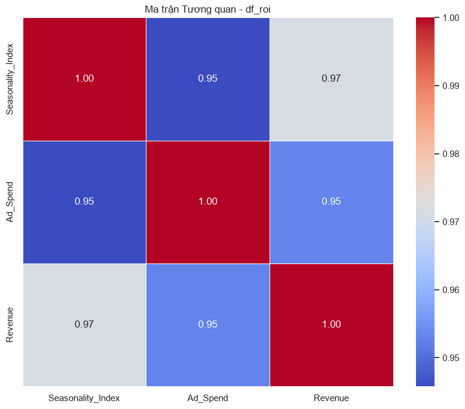
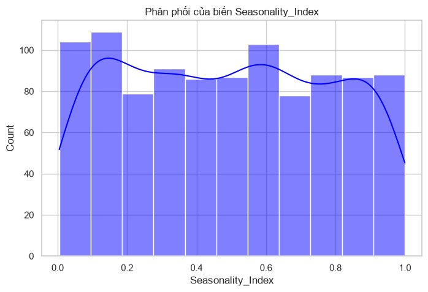

CHƯƠNG 6: PHÂN TÍCH TƯƠNG QUAN, ANOVA VÀ HỒI QUY TUYẾN TÍNH BỘI#
6.1. Tình huống dẫn dắt: Ước lượng cận biên và tối ưu hóa ngân sách quảng cáo#
Trong bối cảnh bùng nổ dữ liệu và cạnh tranh khốc liệt của nền kinh tế hiện đại, việc ra quyết định dựa trên cảm tính đã hoàn toàn nhường chỗ cho các mô hình định lượng. Hãy hình dung một tình huống thực tế tại ban giám đốc tài chính và tiếp thị của một tập đoàn bán lẻ quy mô lớn chuyên phân phối các sản phẩm tiêu dùng nhanh. Hằng ngày, tập đoàn này phải đối mặt với áp lực khổng lồ trong việc phân bổ một nguồn ngân sách tiếp thị lên tới hàng trăm tỷ đồng mỗi năm cho các chiến dịch truyền thông quảng cáo trên nhiều kênh khác nhau như mạng xã hội, công cụ tìm kiếm, và truyền hình truyền thống. Câu hỏi cốt lõi luôn xuất hiện trong mọi cuộc họp chiến lược là: Nếu chúng ta quyết định gia tăng thêm một đơn vị ngân sách quảng cáo vào một kênh cụ thể, thì doanh số bán hàng dự kiến sẽ phản hồi tăng thêm bao nhiêu đơn vị? Đây chính là bài toán ước lượng hiệu ứng cận biên, một khái niệm kinh tế học tối quan trọng giúp doanh nghiệp tối ưu hóa việc phân bổ tài nguyên nhằm đạt lợi nhuận cực đại trong điều kiện nguồn lực hữu hạn.
Để giải quyết bài toán này, nhóm phân tích dữ liệu của tập đoàn bắt đầu bằng việc thu thập dữ liệu lịch sử vận hành hằng ngày trong ba năm gần nhất, bao gồm doanh thu bán hàng hằng ngày và chi phí quảng cáo tương ứng trên từng kênh. Phương pháp tiếp cận thô sơ và phổ biến nhất mà các nhà quản lý thường áp dụng là tính toán hệ số tương quan tuyến tính đơn giản giữa chi phí quảng cáo và doanh thu. Nếu kết quả tính toán cho thấy một hệ số tương quan rất cao, chẳng hạn như không phẩy tám mươi lăm, họ sẽ vội vã đưa ra kết luận rằng chiến dịch quảng cáo đang mang lại hiệu quả vượt bậc và lập tức ký quyết định nhân đôi ngân sách. Tuy nhiên, lối tư duy giản đơn này chứa đựng những cạm bẫy nhận thức luận vô cùng nguy hiểm. Mối tương quan mạnh mẽ về mặt số học giữa hai biến số không bao giờ đồng nghĩa với mối quan hệ nhân quả thực chất. Sự gia tăng đồng thời của chi phí quảng cáo và doanh thu có thể hoàn toàn là kết quả của một yếu tố thứ ba tác động lên cả hai, tạo ra một mối liên kết giả tạo.
Yếu tố thứ ba đó trong tình huống này chính là tính mùa vụ của nhu cầu tiêu dùng. Hãy xem xét thực tế hoạt động kinh doanh của doanh nghiệp: vào các dịp lễ tết hoặc ngày hội mua sắm cuối năm, nhu cầu mua sắm của người dân tự động tăng vọt do tâm lý tiêu dùng truyền thống, bất kể doanh nghiệp có quảng cáo hay không. Đồng thời, nhận thức được thời điểm vàng này, bộ phận tiếp thị cũng chủ động tập trung phần lớn ngân sách quảng cáo vào những ngày cận lễ để kích cầu tối đa. Nếu một nhà phân tích thực hiện một mô hình hồi quy tuyến tính đơn biến, chỉ dùng chi phí quảng cáo để giải thích cho doanh thu mà bỏ qua chỉ số mùa vụ, mô hình đó sẽ mắc phải sai số hệ thống cực kỳ nghiêm trọng. Thuật ngữ học thuật gọi hiện tượng này là Omitted Variable Bias số quan trọng (Omitted Variable Bias - OVB), dẫn đến việc mô hình đánh giá quá cao tác động thực tế của chi phí quảng cáo. Mô hình sẽ gán toàn bộ sự tăng trưởng doanh thu tự nhiên của dịp lễ tết cho nỗ lực quảng cáo, khiến doanh nghiệp lầm tưởng rằng mỗi đồng chi cho tiếp thị đang mang lại lợi nhuận thần kỳ, dẫn đến những quyết định đầu tư sai lầm và lãng phí ngân sách khổng lồ trong các giai đoạn thấp điểm khi nhu cầu tự nhiên của xã hội sụt giảm.
Để bóc tách được hiệu ứng nhân quả thực sự của quảng cáo, chúng ta cần một công cụ toán học có khả năng giữ cố định tất cả các yếu tố nhiễu khác để cô lập tác động riêng biệt của chi phí tiếp thị. Đây chính là sứ mệnh của Mô hình Hồi quy Tuyến tính Bội (Multiple Linear Regression) sử dụng phương pháp bình phương tối thiểu thông thường (Ordinary Least Squares - OLS) mà chúng ta sẽ nghiên cứu chuyên sâu trong chương này. Bằng cách đưa thêm biến chỉ số mùa vụ và các biến kiểm soát khác như mặt bằng giá cả hay hành vi của đối thủ cạnh tranh vào mô hình hồi quy đồng thời, chúng ta có thể thực hiện nguyên lý giữ các yếu tố khác không đổi (ceteris paribus). Chỉ khi đó, hệ số hồi quy của biến chi phí quảng cáo mới phản ánh đúng hiệu quả cận biên thực chất, giúp doanh nghiệp trả lời chính xác câu hỏi về tỷ suất hoàn vốn đầu tư tiếp thị.
Bên cạnh đó, hoạt động kinh doanh của tập đoàn không diễn ra trong một không gian đồng nhất mà được phân chia thành nhiều vùng địa lý với các đặc thù văn hóa và hành vi tiêu dùng khác nhau như vùng phía Bắc, vùng phía Nam, và vùng miền Trung. Ban giám đốc cần biết liệu mức doanh thu trung bình hằng ngày giữa các vùng này có thực sự khác biệt đáng kể về mặt thống kê hay không, và liệu các vùng có phản hồi khác nhau đối với các chương trình khuyến mại hay không. Nếu chỉ so sánh các con số trung bình mẫu thô ráp, chúng ta sẽ rất dễ bị đánh lừa bởi các biến động ngẫu nhiên của dữ liệu hằng ngày. Để đưa ra kết luận khoa học vững chắc, chúng ta cần áp dụng Phân tích Phương sai (Analysis of Variance - ANOVA) để phân rã tổng biến động của doanh thu thành biến động giữa các vùng và biến động ngẫu nhiên trong nội bộ từng vùng. Phép kiểm định này sẽ cung cấp bằng chứng định lượng để xác nhận sự khác biệt vùng miền có ý nghĩa thống kê, làm cơ sở cho việc cá nhân hóa chiến lược phân bổ hàng hóa và ngân sách cho từng khu vực địa lý cụ thể.
Hơn thế nữa, trong kỷ nguyên dữ liệu lớn hiện nay, số lượng các biến số giải thích tiềm năng có thể tăng lên rất nhiều, từ các chỉ số kinh tế vĩ mô, lãi suất, tỷ giá, đến các chỉ số thời tiết hằng ngày hay chỉ số cảm xúc trên mạng xã hội. Việc ném tất cả các biến số này vào một mô hình hồi quy tuyến tính bội thông thường sử dụng phương pháp OLS sẽ dẫn đến thảm họa Multicollinearity cực đoan và hiện tượng Overfitting dữ liệu (Overfitting). Mô hình OLS khi đó sẽ trở nên cực kỳ nhạy cảm với các biến động nhỏ của mẫu dữ liệu, làm sai lệch hoàn toàn các hệ số hồi quy cận biên và làm mất đi khả năng dự báo trên các mẫu dữ liệu mới. Để giải quyết thách thức này, chúng ta cần tiếp cận các kỹ thuật điều trị hiện đại từ góc nhìn học máy, tiêu biểu là các phương pháp hồi quy chính quy hóa (Regularization) như hồi quy Ridge, hồi quy Lasso, và Elastic Net. Các kỹ thuật này giới thiệu các hàm phạt toán học để kiểm soát độ lớn của các hệ số hồi quy, chủ động loại bỏ các biến số không có giá trị thực chất hoặc co rút chúng lại để đảm bảo tính ổn định tối đa cho mô hình.
Làm chủ được các kỹ thuật phân tích tương quan, ANOVA, hồi quy tuyến tính bội, và các phương pháp chính quy hóa trong chương này sẽ trang bị cho nhà phân tích một tư duy kiểm định nghiêm túc và một hộp công cụ định lượng sắc bén. Đây chính là nền tảng cốt lõi của kinh tế lượng truyền thống và là bước đệm bắt buộc để chuyển giao sang các mô hình học máy dự báo phức tạp. Bằng việc kết hợp chặt chẽ giữa lý thuyết toán học đại số tuyến tính từ Chương 1, các bước làm sạch dữ liệu từ Chương 2, và tư duy cấu trúc nhân quả từ Chương 3, chúng ta sẽ xây dựng được một đường ống phân tích đáng tin cậy. Đường ống này sẽ giúp doanh nghiệp đưa ra các quyết định tối ưu hóa dựa trên bằng chứng khoa học vững chắc, tránh xa những cạm bẫy của việc phân tích đơn biến thô sơ hoặc việc cố ý thao túng kết quả thống kê để phục vụ các lập luận chủ quan.
6.2. Phân tích Tương quan và Phân tích Phương sai ANOVA#
Bước chân vào không gian phân tích dữ liệu đa biến, nền tảng đầu tiên mà mọi nhà nghiên cứu cần nắm vững là các kỹ thuật đo lường mối liên kết và so sánh sự khác biệt giữa các nhóm quan sát. Phân tích Tương quan và Phân tích Phương sai ANOVA đóng vai trò là những viên gạch đầu tiên thiết lập cấu trúc liên hệ tuyến tính và kiểm định giả thuyết thống kê, giúp chúng ta định hình thế giới quan về sự biến động đồng thời của các hiện tượng kinh tế và hành vi tiêu dùng trước khi xây dựng các mô hình dự báo hay nhân quả phức tạp hơn.
6.2.1. Phân tích tương quan tuyến tính và tương quan chính tắc#
Kỹ thuật đo lường sự liên kết đơn giản và phổ biến nhất là hệ số tương quan tuyến tính Pearson, thường được ký hiệu là \(r\). Về mặt toán học, hệ số Pearson đo lường mức độ và chiều hướng của mối quan hệ tuyến tính giữa hai biến số liên tục \(X\) và \(Y\). Hệ số này được tính toán bằng cách chia hiệp phương sai của hai biến cho tích độ lệch chuẩn tương ứng của chúng theo công thức cụ thể như sau:
Trong công thức này, \(x_i\) và \(y_i\) là các giá trị quan sát thứ \(i\) của biến \(X\) và \(Y\), còn \(\bar{x}\) và \(\bar{y}\) lần lượt là các giá trị trung bình mẫu tương ứng. Giá trị của hệ số tương quan Pearson luôn dao động trong khoảng giới hạn từ âm một đến dương một. Một hệ số tương quan bằng dương một thể hiện mối quan hệ tuyến tính thuận chiều hoàn hảo, nghĩa là khi biến số \(X\) gia tăng thì biến số \(Y\) cũng gia tăng theo một tỷ lệ cố định tuyệt đối. Ngược lại, hệ số bằng âm một biểu thị mối quan hệ tuyến tính nghịch chiều hoàn hảo, và hệ số bằng không báo hiệu không tồn tại mối liên kết tuyến tính nào giữa hai biến số. Để diễn giải định lượng ý nghĩa của hệ số tương quan tuyến tính trong thực tiễn nghiên cứu kinh tế, các nhà khoa học thường phân chia các mức độ mạnh yếu của tương quan thành các khoảng giá trị cụ thể, trong đó giá trị tuyệt đối từ không phẩy mười đến không phẩy ba mươi đại diện cho mối tương quan yếu, từ không phẩy ba mươi đến không phẩy năm mươi là tương quan trung bình, từ không phẩy năm mươi đến không phẩy bảy mươi là tương quan mạnh, và trên không phẩy bảy mươi thể hiện mối tương quan rất mạnh mẽ.
Ngoài ra, bình phương của hệ số tương quan Pearson, ký hiệu là \(r^2\), được gọi là hệ số xác định (coefficient of determination). Chỉ số này phản ánh tỷ lệ phương sai của biến số \(Y\) được giải thích trực tiếp bởi biến số \(X\) thông qua mối quan hệ tuyến tính giữa chúng. Ví dụ, nếu hệ số tương quan giữa ngân sách quảng cáo và doanh thu là không phẩy tám mươi, thì hệ số xác định là không phẩy sáu mươi tư, nghĩa là sáu mươi tư phần trăm sự biến động của doanh thu có thể được giải thích bởi sự thay đổi của chi phí tiếp thị, phần còn lại do sai số ngẫu nhiên hoặc các biến số khác.
Tuy nhiên, một hệ số tương quan tính toán được từ mẫu dữ liệu có thể xuất hiện do sự ngẫu nhiên của việc chọn mẫu. Do đó, chúng ta bắt buộc phải tiến hành kiểm định giả thuyết thống kê để xác nhận xem tương quan trong tổng thể có thực sự khác không hay không. Phép kiểm định này thiết lập giả thuyết không tuyên bố hệ số tương quan tổng thể bằng không, đối chiếu với giả thuyết đối rằng hệ số tương quan tổng thể khác không. Chúng ta sử dụng thống kê \(t\) được tính toán từ hệ số tương quan mẫu \(r\) và kích thước mẫu \(n\) theo công thức như sau:
Thống kê \(t\) này tuân theo phân phối Student t-distribution với số bậc tự do là \(n - 2\). Nếu giá trị \(t\) tính toán vượt qua ngưỡng tới hạn hoặc giá trị ý nghĩa p-value nhỏ hơn mức ý nghĩa lựa chọn, chúng ta có quyền bác bỏ giả thuyết không và khẳng định mối tương quan tuyến tính giữa hai biến số có ý nghĩa thống kê thực sự trong tổng thể.
Việc áp dụng hệ số tương quan Pearson đòi hỏi dữ liệu phải tuân thủ nghiêm ngặt các giả định nền tảng bao gồm tính tuyến tính của mối quan hệ, tính chuẩn đa biến của phân phối xác suất, và thang đo của cả hai biến phải là thang đo khoảng hoặc thang đo tỷ lệ. Trong thực tế dữ liệu kinh tế và xã hội, các giả định này rất thường xuyên bị vi phạm do sự xuất hiện của các điểm dữ liệu Outliers cực đoan hoặc do mối quan hệ giữa các biến số có tính chất phi tuyến tính rõ rệt. Để giải quyết các tình huống này, hệ số tương quan hạng Spearman, ký hiệu là \(\rho\), được đưa vào sử dụng như một giải pháp thay thế phi tham số vô cùng mạnh mẽ.
Hệ số Spearman hoạt động bằng cách chuyển đổi các giá trị thực tế của \(X\) và \(Y\) thành các thứ hạng tương ứng từ nhỏ đến lớn trước khi thực hiện tính toán. Công thức tính toán hệ số Spearman được biểu diễn như sau:
Trong đó, \(d_i\) đại diện cho sự chênh lệch giữa thứ hạng của quan sát thứ \(i\) trên thang đo \(X\) và thang đo \(Y\), còn \(n\) là quy mô mẫu quan sát. Do hoạt động trên thứ hạng, hệ số Spearman không đòi hỏi giả định về phân phối chuẩn hay tính tuyến tính, mà chỉ tập trung đánh giá xem mối quan hệ giữa hai biến có tính đơn điệu hay không. Kỹ thuật này cực kỳ bền vững trước tác động của các giá trị Outliers và hoàn toàn phù hợp cho các dữ liệu sử dụng thang đo thứ bậc. Hãy tưởng tượng một ví dụ cụ thể khi chúng ta muốn đánh giá mức độ đồng thuận giữa hai chuyên gia tài chính khi họ xếp hạng mức độ ưu tiên đầu tư của năm dự án phát triển sản phẩm mới của ngân hàng. Chuyên gia thứ nhất xếp hạng các dự án theo thứ tự là một, hai, ba, bốn, năm. Chuyên gia thứ hai xếp hạng tương ứng là hai, một, ba, năm, bốn. Việc tính toán sự chênh lệch thứ hạng hằng ngày và áp dụng công thức Spearman sẽ cho ra một hệ số tương quan hạng phản ánh chính xác sự đồng điệu trong thế giới quan của hai chuyên gia mà không bị ảnh hưởng bởi khoảng cách số học tuyệt đối của các đánh giá.
Khi không gian nghiên cứu phình to ra và chúng ta cần đánh giá mối quan hệ giữa một tập hợp nhiều biến số độc lập với một tập hợp nhiều biến số phụ thuộc, việc tính toán các hệ số tương quan đơn lẻ giữa từng cặp biến số sẽ làm phân mảnh thông tin và dẫn đến sai số hệ thống do bỏ sót mối tương tác đa chiều. Để giải quyết triệt để vấn đề này, kỹ thuật Phân tích Tương quan Chính tắc (Canonical Correlation Analysis - CCA) được phát triển nhằm xác định mối liên kết tổng quát giữa hai tập hợp biến số. Phân tích tương quan chính tắc tìm kiếm các tổ hợp tuyến tính của tập hợp biến thứ nhất, ký hiệu là \(U = \mathbf{a}^T X\), và tổ hợp tuyến tính của tập hợp biến thứ hai, ký hiệu là \(V = \mathbf{b}^T Y\), sao cho hệ số tương quan tuyến tính giữa hai biến tổng hợp \(U\) và \(V\) đạt giá trị cực đại.
Các hệ số trong vector \(\mathbf{a}\) và \(\mathbf{b}\) được gọi là các trọng số chính tắc (canonical weights or canonical coefficients), đóng vai trò tương tự như các hệ số hồi quy chuẩn hóa trong mô hình hồi quy bội, phản ánh đóng góp đóng góp riêng biệt của từng biến số ban đầu vào biến tổng hợp sau khi đã kiểm soát ảnh hưởng của các biến khác. Ngược lại, hệ số tải chính tắc (canonical loadings) đo lường tương quan tuyến tính đơn giản giữa biến quan sát ban đầu và biến tổng hợp chính tắc của chính tập hợp đó, còn hệ số tải chéo chính tắc (canonical cross-loadings) phản ánh tương quan giữa biến quan sát của tập hợp này với biến tổng hợp của tập hợp kia. Sự phân biệt giữa trọng số chính tắc và hệ số tải chính tắc là vô cùng quan trọng, giúp tránh những hiểu lầm khi diễn giải tầm quan trọng của các đặc trưng dữ liệu.
Để đánh giá ý nghĩa thống kê của các mối tương quan chính tắc thu được, chúng ta sử dụng thống kê Wilks’ Lambda, được định nghĩa bằng tích của các phần bù bình phương tương quan chính tắc theo công thức toán học dưới đây:
Trong công thức này, \(r_i\) đại diện cho tương quan chính tắc thứ \(i\), và \(d\) là tổng số cặp biến chính tắc được trích xuất. Giá trị Wilks’ Lambda dao động từ không đến một, trong đó giá trị càng nhỏ thể hiện mối quan hệ liên kết giữa hai tập hợp biến số càng mạnh mẽ và có ý nghĩa thống kê cao. Bình phương của tương quan chính tắc, \(r_i^2\), chính là một giá trị riêng (eigenvalue) của ma trận tích hợp các ma trận hiệp phương sai giữa hai tập hợp biến số, phản ánh tỷ lệ phương sai chung được giải thích bởi cặp biến chính tắc thứ \(i\). Phân tích tương quan chính tắc giúp rút gọn cấu trúc liên hệ phức tạp giữa hai không gian biến số về một số ít các chiều tương tác cốt lõi nhất, mang lại góc nhìn toàn diện và sâu sắc cho các quyết định hoạch định chiến lược đa mục tiêu của doanh nghiệp.
6.2.2. Phân tích phương sai ANOVA một nhân tố và hai nhân tố#
Trong khi phân tích tương quan tập trung vào mối liên kết giữa các biến số liên tục, nhà quản trị thường xuyên đối diện với nhu cầu so sánh các giá trị trung bình của một biến kết quả liên tục trên các phân nhóm được định nghĩa bởi các biến phân loại định danh. Hãy xem xét bài toán so sánh doanh số bán hàng trung bình hằng ngày giữa các vùng địa lý khác nhau của tập đoàn bán lẻ. Nếu chúng ta chỉ thực hiện nhiều phép kiểm định t-test cặp đôi giữa từng cặp vùng, sai lầm loại một sẽ bị tích lũy và phình to lên nhanh chóng. Phân tích Phương sai (Analysis of Variance - ANOVA) cung cấp giải pháp vượt trội bằng cách thực hiện một phép kiểm định đồng thời duy nhất để đánh giá sự khác biệt giữa tất cả các nhóm.
Triết lý cốt lõi của ANOVA là phân rã toàn bộ sự biến động của biến phụ thuộc, được đo lường bằng Tổng bình phương sai lệch toàn bộ (Total Sum of Squares - SST), thành hai thành phần độc lập đại diện cho hai nguồn biến động khác nhau. Thành phần thứ nhất là Tổng bình phương sai lệch giữa các nhóm (Sum of Squares Between - SSB), phản ánh sự khác biệt giữa các trung bình nhóm và trung bình tổng thể, đại diện cho tác động của biến phân loại. Thành phần thứ hai là Tổng bình phương sai lệch trong nội bộ nhóm (Sum of Squares Within - SSW), đo lường sự phân tán của các quan sát cá thể xung quanh trung bình nhóm của chính chúng, đại diện cho sai số ngẫu nhiên không giải thích được. Công thức phân rã toán học này được viết dưới dạng:
Để tính toán cụ thể cho một tập dữ liệu có \(G\) nhóm và tổng số \(N\) quan sát, trong đó nhóm thứ \(g\) có quy mô \(n_g\) quan sát, chúng ta định nghĩa các công thức tính toán cho từng thành phần sai lệch bình phương. Tổng bình phương sai lệch toàn bộ được tính theo công thức:
Trong đó, \(y_{gi}\) là giá trị quan sát thứ \(i\) trong nhóm thứ \(g\), và \(\bar{y}_{\cdot\cdot}\) là giá trị trung bình tổng thể của toàn bộ \(N\) quan sát. Tổng bình phương sai lệch giữa các nhóm được xác định bằng công thức:
Trong đó, \(\bar{y}_{g\cdot}\) là giá trị trung bình của riêng nhóm thứ \(g\). Cuối cùng, Tổng bình phương sai lệch trong nội bộ nhóm được tính bằng công thức:
Để hiểu rõ tại sao việc so sánh các tổng bình phương sai lệch lại cho phép kiểm định sự bằng nhau của các giá trị trung bình, chúng ta cần xem xét kỳ vọng toán học của các phương sai trung bình tương ứng dưới các giả thuyết khác nhau. Gọi \(\sigma^2\) là phương sai sai số ngẫu nhiên của tổng thể trong từng phân nhóm. Kỳ vọng toán học của Phương sai trung bình trong nội bộ nhóm \(MSW\) luôn bằng phương sai tổng thể bất kể giả thuyết không có đúng hay không:
Tuy nhiên, kỳ vọng toán học của Phương sai trung bình giữa các nhóm \(MSB\) lại phụ thuộc vào sự khác biệt thực sự giữa các trung bình tổng thể của các nhóm, được biểu diễn bằng công thức cụ thể dưới đây:
Trong công thức này, \(\mu_g\) là trung bình thực tế của nhóm thứ \(g\), và \(\mu\) là trung bình tổng thể của toàn bộ quần thể. Nếu giả thuyết không đúng, nghĩa là tất cả các trung bình nhóm tổng thể đều bằng nhau và bằng \(\mu\), thành phần thứ hai ở vế phải của phương trình trên sẽ biến mất hoàn toàn, khi đó cả hai kỳ vọng toán học \(E(MSB)\) và \(E(MSW)\) đều bằng \(\sigma^2\). Tỷ số của chúng, chính là thống kê F, sẽ dao động xung quanh giá trị một. Ngược lại, nếu tồn tại sự khác biệt thực sự giữa các nhóm, kỳ vọng toán học của \(MSB\) sẽ lớn hơn đáng kể so với \(\sigma^2\), kéo theo thống kê F tăng vọt vượt qua ngưỡng một, cung cấp bằng chứng vững chắc để bác bỏ giả thuyết không.
Mô hình phân tích trên được gọi là ANOVA một nhân tố (One-way ANOVA) vì chỉ sử dụng duy nhất một biến phân loại để chia nhóm. Trong nhiều tình huống phức tạp hơn, chúng ta muốn khảo sát tác động đồng thời của hai biến phân loại khác nhau lên cùng một biến kết quả liên tục. Đây chính là không gian ứng dụng của ANOVA hai nhân tố (Two-way ANOVA). Mô hình toán học của ANOVA hai nhân tố được viết dưới dạng phương trình cụ thể như sau:
Trong phương trình này, \(y_{ijk}\) là giá trị quan sát của cá thể thứ \(k\) thuộc mức độ \(i\) của nhân tố thứ nhất và mức độ \(j\) của nhân tố thứ hai, \(\mu\) là trung bình chung của toàn bộ quần thể, \(\alpha_i\) đại diện cho tác động chính của mức độ thứ \(i\) của nhân tố thứ nhất, \(\beta_j\) đại diện cho tác động chính của mức độ thứ \(j\) của nhân tố thứ hai, \((\alpha\beta)_{ij}\) biểu diễn hiệu ứng tương tác giữa hai nhân tố tại các mức độ tương ứng, và \(\epsilon_{ijk}\) là sai số ngẫu nhiên tuân theo phân phối chuẩn có trung bình bằng không và phương sai đồng nhất \(\sigma^2\). Mô hình này cho phép chúng ta đánh giá tác động riêng lẻ của từng nhân tố chính và kiểm định được hiệu ứng tương tác. Hiệu ứng tương tác xuất hiện khi tác động của nhân tố này lên biến phụ thuộc thay đổi tùy thuộc vào mức độ của nhân tố kia, mang lại hiểu biết sâu sắc về các kịch bản kết hợp chiến lược trong thực tế quản trị kinh doanh.
Tuy nhiên, kết quả kiểm định ANOVA chỉ đáng tin cậy khi dữ liệu thỏa mãn ba giả định thống kê cốt lõi bao gồm tính độc lập của các quan sát, tính chuẩn của phân phối biến phụ thuộc trong từng phân nhóm, và tính đồng nhất của phương sai giữa các nhóm. Giả định về tính đồng nhất phương sai yêu cầu mức độ phân tán của dữ liệu xung quanh trung bình nhóm phải tương đương nhau giữa tất cả các nhóm. Chúng ta kiểm định giả định này bằng kiểm định Bartlett hoặc kiểm định Levene.
Có một sự khác biệt quan trọng giữa hai phép kiểm định phương sai này: kiểm định Bartlett cực kỳ nhạy cảm với các vi phạm về giả định phân phối chuẩn của dữ liệu đầu vào, nghĩa là nếu dữ liệu không chuẩn, kiểm định Bartlett dễ dàng trả về kết quả bác bỏ giả thuyết đồng nhất phương sai ngay cả khi phương sai thực tế của các nhóm không có sự chênh lệch lớn. Ngược lại, kiểm định Levene sử dụng độ lệch tuyệt đối so với trung vị nhóm thay vì trung bình nhóm, mang lại độ bền vững rất cao trước hiện tượng phân phối lệch hoặc không chuẩn. Nếu các phép kiểm định này chỉ ra phương sai không đồng nhất, phép kiểm định F tiêu chuẩn của ANOVA sẽ bị vô hiệu hóa. Khi đó, chúng ta bắt buộc phải sử dụng phép kiểm định Welch ANOVA, một kỹ thuật điều chỉnh giá trị F và số bậc tự do theo phương pháp xấp xỉ Satterthwaite để đảm bảo tỷ lệ sai lầm thống kê luôn được kiểm soát chính xác.
Cuối cùng, khi phép kiểm định F của ANOVA trả về kết quả có ý nghĩa thống kê cho thấy tồn tại sự khác biệt giữa các trung bình nhóm, chúng ta vẫn chưa biết cụ thể nhóm nào khác biệt với nhóm nào. ANOVA chỉ là một kiểm định tổng quát. Để xác định chính xác các cặp nhóm có sự khác biệt thực chất, chúng ta phải tiến hành các phép kiểm định so sánh cặp sau phân tích (Post-hoc tests). Các phép kiểm định này sử dụng các kỹ thuật điều chỉnh sai số nghiêm ngặt nhằm kiểm soát tỷ lệ sai lầm loại một toàn cục. Một trong những phương pháp phổ biến nhất là Tukey’s Honestly Significant Difference (Tukey’s HSD), sử dụng thống kê phạm vi Studentized Range để tính toán khoảng sai biệt có ý nghĩa theo công thức cụ thể:
Trong đó, \(s\) là độ lệch chuẩn gộp và \(n\) là quy mô mẫu của phân nhóm. Bên cạnh đó, hiệu chỉnh Bonferroni điều chỉnh mức ý nghĩa của từng phép so sánh cặp bằng cách chia mức ý nghĩa toàn cục \(\alpha\) cho tổng số phép so sánh cặp được thực hiện, đảm bảo các kết luận so sánh chi tiết luôn đạt độ tin cậy khoa học cao nhất. Việc làm chủ toàn diện phân tích tương quan và phân tích phương sai ANOVA này không chỉ giúp làm sáng tỏ cấu trúc tương tác sơ bộ của các biến số mà còn là kim chỉ nam giúp chúng ta phát hiện các mối quan hệ phi lý trước khi tiến hành xây dựng mô hình hồi quy tuyến tính bội ở phần tiếp theo.
6.3. Mô hình Hồi quy Tuyến tính Bội (OLS) và Omitted Variable Bias (OVB)#
Xương sống của phân tích thống kê hồi quy chính là mô hình hồi quy tuyến tính bội, một công cụ cho phép chúng ta đồng thời đánh giá tác động của nhiều biến số giải thích lên một biến phụ thuộc liên tục. Việc đi sâu vào nền tảng toán học của phương pháp bình phương tối thiểu thông thường (OLS) giúp chúng ta hiểu rõ cách thức tối ưu hóa các tham số và nhận diện các giới hạn lý thuyết vô cùng nghiêm ngặt của mô hình này trong thực tiễn nghiên cứu kinh tế.
6.3.1. Phương pháp OLS, các giả định Gauss-Markov và BLUE#
Để thiết lập mô hình hồi quy tuyến tính bội cho một mẫu gồm \(n\) quan sát và \(k\) biến số giải thích độc lập, chúng ta biểu diễn mối liên hệ dưới dạng phương trình ma trận tổng quát như sau:
Trong phương trình ma trận này, \(\mathbf{y}\) đại diện cho vector cột kích thước \(n \times 1\) chứa các giá trị của biến phụ thuộc. Ma trận \(\mathbf{X}\) là ma trận thiết kế (design matrix) kích thước \(n \times (k + 1)\), trong đó cột đầu tiên chứa toàn bộ giá trị bằng một để đại diện cho hệ số chặn (intercept), và các cột tiếp theo chứa giá trị của \(k\) biến số giải thích độc lập cho từng quan sát. Vector \(\boldsymbol{\beta}\) là vector cột kích thước \((k + 1) \times 1\) chứa các tham số hồi quy cần ước lượng, và \(\boldsymbol{\varepsilon}\) là vector cột kích thước \(n \times 1\) đại diện cho các sai số ngẫu nhiên của mô hình.
Phương pháp bình phương tối thiểu thông thường (Ordinary Least Squares - OLS) tìm kiếm vector ước lượng \(\hat{\boldsymbol{\beta}}\) sao cho tổng bình phương các sai số dự báo (residuals) đạt giá trị cực tiểu. Hàm mục tiêu bình phương sai số được biểu diễn bằng phép toán ma trận như sau:
Để khai triển hàm mục tiêu này, chúng ta thực hiện phép nhân ma trận và thu được biểu thức cụ thể:
Để tìm giá trị cực tiểu của hàm mục tiêu \(S(\boldsymbol{\beta})\), chúng ta tiến hành lấy đạo hàm riêng theo vector \(\boldsymbol{\beta}\) và cho kết quả bằng vector không:
Giải phương trình đạo hàm này, chúng ta thu được lời giải giải tích kinh điển của ước lượng OLS dưới dạng ma trận:
Điều kiện tiên quyết để lời giải này tồn tại là ma trận nghịch đảo \((\mathbf{X}^T \mathbf{X})^{-1}\) phải tồn tại, nghĩa là ma trận thiết kế \(\mathbf{X}\) phải có hạng đầy đủ (full column rank) bằng \(k + 1\). Điều này tương đương với giả định không tồn tại hiện tượng Multicollinearity hoàn hảo giữa các biến giải thích trong mô hình.
Khi giả định về sự vắng bóng của Multicollinearity hoàn hảo bị vi phạm nhẹ, nghĩa là tồn tại Multicollinearity không hoàn hảo cường độ mạnh giữa các biến giải thích, phương pháp OLS vẫn tính toán được kết quả nhưng ma trận hiệp phương sai của hệ số ước lượng sẽ phình to đáng kể. Mức độ nghiêm trọng của Multicollinearity được định lượng bằng Nhân tố phóng đại phương sai (Variance Inflation Factor - VIF) cho từng biến giải thích \(X_j\) theo công thức cụ thể:
Trong đó, \(R_j^2\) là hệ số xác định thu được khi chúng ta thực hiện phép hồi quy phụ dùng biến độc lập \(X_j\) làm biến phụ thuộc và giải thích nó bằng toàn bộ \(k-1\) biến độc lập còn lại. Một giá trị VIF vượt quá ngưỡng mười báo hiệu hiện tượng Multicollinearity cực đoan, làm mất đi tính ổn định của các hệ số ước lượng cận biên, khiến độ lệch chuẩn của chúng tăng cao và làm giảm đáng kể lực lượng kiểm định thống kê.
Để khắc phục hiện tượng Multicollinearity này, nhà phân tích có thể áp dụng các chiến lược xử lý cụ thể như loại bỏ một trong hai biến số có tương quan quá cao, tăng thêm kích thước mẫu quan sát để cung cấp thêm thông tin, hoặc thực hiện kỹ thuật Principal Component Analysis (PCA) đã học ở Chương 4 để gộp các biến độc lập tương quan thành một chỉ số tổng hợp duy nhất trước khi chạy hồi quy.
Để đo lường mức độ phù hợp tổng thể của mô hình hồi quy, chúng ta sử dụng hệ số xác định \(R^2\), được định nghĩa bằng tỷ lệ giữa tổng bình phương sai lệch được giải thích (SSR) và tổng bình phương sai lệch toàn bộ (SST) theo công thức:
Hệ số \(R^2\) biểu thị tỷ lệ phần trăm biến động của biến phụ thuộc được giải thích bởi toàn bộ các biến độc lập trong mô hình. Tuy nhiên, \(R^2\) có một nhược điểm lớn: khi đưa thêm bất kỳ biến độc lập mới nào vào mô hình, kể cả những biến rác hoàn toàn không có ý nghĩa kinh tế, giá trị \(R^2\) vẫn luôn gia tăng hoặc giữ nguyên chứ không bao giờ giảm. Để khắc phục điều này, chúng ta sử dụng hệ số xác định hiệu chỉnh (Adjusted R-squared), ký hiệu là \(\bar{R}^2\), được tính theo công thức cụ thể:
Trong đó, \(n\) là quy mô mẫu và \(k\) là số lượng biến độc lập. Hệ số \(\bar{R}^2\) đưa vào một hình phạt toán học \(\frac{n-1}{n-k-1}\) đối với sự phức tạp của mô hình. Chỉ khi biến số mới đưa vào đóng góp khả năng giải thích thực chất vượt qua hình phạt này, hệ số xác định hiệu chỉnh mới gia tăng, giúp nhà phân tích lựa chọn số lượng đặc trưng tối ưu.
Để đánh giá ý nghĩa thống kê của toàn bộ mô hình hồi quy tuyến tính bội, chúng ta sử dụng phép kiểm định F tổng quát (F-test for overall significance). Phép kiểm định này so sánh khả năng giải thích của mô hình hồi quy với một mô hình cơ sở chỉ chứa duy nhất hệ số chặn. Thống kê kiểm định F được tính toán dựa trên Tổng bình phương sai lệch được giải thích bởi hồi quy (SSR) và Tổng bình phương sai lệch sai số ngẫu nhiên (SSE) theo công thức như sau:
Nếu thống kê F tính toán lớn hơn giá trị tới hạn hoặc p-value nhỏ hơn mức ý nghĩa lựa chọn, chúng ta có đủ bằng chứng bác bỏ giả thuyết không và khẳng định rằng tồn tại ít nhất một biến giải thích độc lập đóng góp ý nghĩa vào việc giải thích sự biến động của biến phụ thuộc.
Để đảm bảo rằng ước lượng OLS \(\hat{\boldsymbol{\beta}}\) sở hữu các thuộc tính thống kê tối ưu trong thực tiễn, mô hình hồi quy phải thỏa mãn tập hợp các giả định Gauss-Markov vô cùng nghiêm ngặt. Giả định thứ nhất yêu cầu mô hình phải có tính tuyến tính đối với các tham số \(\boldsymbol{\beta}\). Giả định thứ hai tuyên bố rằng mẫu dữ liệu được thu thập một cách ngẫu nhiên từ tổng thể chung. Giả định thứ ba loại bỏ hiện tượng Multicollinearity hoàn hảo bằng cách yêu cầu hạng của ma trận thiết kế phải đầy đủ. Giả định thứ tư, cũng là giả định quan trọng nhất, yêu cầu kỳ vọng có điều kiện của sai số ngẫu nhiên phải bằng không khi biết trước ma trận thiết kế, nghĩa là \(E(\boldsymbol{\varepsilon} | \mathbf{X}) = \mathbf{0}\). Giả định này khẳng định rằng các biến số giải thích độc lập hoàn toàn không tương quan với sai số ngẫu nhiên, loại bỏ hoàn toàn các yếu tố nội sinh. Giả định thứ năm yêu cầu phương sai của sai số ngẫu nhiên phải đồng nhất và không thay đổi đối với tất cả các quan sát, nghĩa là \(\text{Var}(\varepsilon_i | \mathbf{X}) = \sigma^2\). Giả định thứ sáu khẳng định không tồn tại mối liên hệ tương quan tự phát giữa các sai số ngẫu nhiên của các quan sát khác nhau, nghĩa là \(\text{Cov}(\varepsilon_i, \varepsilon_j | \mathbf{X}) = 0\) với mọi \(i \neq j\).
Khi chúng ta nghiên cứu các vi phạm đối với giả định thứ sáu về sự không tự tương quan giữa các sai số ngẫu nhiên, đặc biệt là trong bối cảnh dữ liệu chuỗi thời gian, hiện tượng Tự tương quan (Autocorrelation) xuất hiện khi sai số của ngày hôm nay có liên quan tuyến tính với sai số của ngày hôm trước. Hậu quả của vi phạm này là mặc dù các hệ số ước lượng OLS vẫn duy trì tính chất không chệch, ma trận hiệp phương sai tính toán theo phương pháp chuẩn sẽ bị chệch xuống dưới. Điều này khiến độ lệch chuẩn của các hệ số bị đánh giá thấp hơn thực tế, làm phình to các thống kê t-statistic và dẫn đến các kết luận sai lầm về ý nghĩa của các biến độc lập giải thích.
Khi chúng ta kết hợp giả định thứ năm và thứ sáu dưới dạng biểu thức ma trận, ma trận hiệp phương sai có điều kiện của vector sai số ngẫu nhiên được viết một cách cô đọng như sau:
Trong đó, \(\mathbf{I}_n\) đại diện cho ma trận đơn vị kích thước \(n \times n\). Dưới sự bảo hộ của tập hợp các giả định Gauss-Markov này, định lý Gauss-Markov chứng minh một cách toán học rằng ước lượng OLS \(\hat{\boldsymbol{\beta}}\) là Ước lượng Tuyến tính Không chệch Tốt nhất (Best Linear Unbiased Estimator - BLUE). Thuộc tính tuyến tính khẳng định \(\hat{\boldsymbol{\beta}}\) là một tổ hợp tuyến tính của vector biến phụ thuộc \(\mathbf{y}\). Thuộc tính không chệch chứng minh rằng kỳ vọng toán học của ước lượng bằng đúng giá trị tham số thực tế của tổng thể, nghĩa là \(E(\hat{\boldsymbol{\beta}} | \mathbf{X}) = \boldsymbol{\beta}\). Thuộc tính tốt nhất tuyên bố rằng trong số tất cả các ước lượng tuyến tính không chệch có thể có, ước lượng OLS có phương sai nhỏ nhất, nghĩa là nó đạt hiệu quả sử dụng thông tin tối đa. Ma trận hiệp phương sai của ước lượng OLS được tính toán theo công thức:
6.3.2. Hiệu ứng Tương tác (Interaction) và Diễn giải Hệ số Hồi quy#
Khi mô hình hồi quy chứa nhiều biến số giải thích độc lập, việc diễn giải ý nghĩa của các hệ số hồi quy đòi hỏi sự cẩn trọng cao độ. Đối với một mô hình tuyến tính bội thông thường, hệ số hồi quy \(\beta_j\) đại diện cho sự thay đổi kỳ vọng của biến phụ thuộc khi biến số giải thích \(X_j\) tăng thêm một đơn vị đo lường, dưới điều kiện giữ nguyên giá trị của tất cả các biến số giải thích độc lập khác trong mô hình. Trong nhiều nghiên cứu thực tiễn, việc so sánh tầm quan trọng tương đối giữa các biến số giải thích gặp khó khăn do sự khác biệt lớn về đơn vị đo lường vật lý. Để vượt qua điều này, chúng ta sử dụng hệ số hồi quy chuẩn hóa (standardized regression coefficients), được tính toán sau khi đã đưa tất cả các biến về phân phối chuẩn hóa có độ lệch chuẩn bằng một. Các hệ số chuẩn hóa này cho biết biến độc lập nào có tác động mạnh nhất đến biến phụ thuộc mà không phụ thuộc vào quy mô số học ban đầu.
Bên cạnh đó, mô hình hồi quy tuyến tính bội cho phép đưa vào các biến số phân loại định danh thông qua việc sử dụng biến giả (dummy variables or indicator variables). Nếu một biến phân loại có \(G\) nhóm khác nhau, chúng ta phải mã hóa nó bằng \(G - 1\) biến giả nhị phân (chỉ nhận giá trị không hoặc một), và giữ lại một nhóm để làm nhóm đối chiếu (reference group). Việc đưa toàn bộ \(G\) biến giả vào mô hình có chứa hệ số chặn sẽ dẫn đến Bẫy biến giả (dummy variable trap), tạo ra hiện tượng Multicollinearity hoàn hảo khiến mô hình OLS sụp đổ hoàn toàn vì ma trận thiết kế không thể đảo ngược. Hệ số hồi quy của biến giả đại diện cho sự chênh lệch doanh số trung bình giữa nhóm được khảo sát và nhóm đối chiếu, giữ nguyên các yếu tố khác.
Bên cạnh đó, việc lựa chọn dạng hàm (functional forms) phù hợp cho mô hình hồi quy cũng đóng vai trò quyết định trong việc phản ánh đúng bản chất kinh tế của mối quan hệ. Thay vì chỉ áp dụng mô hình tuyến tính đơn giản, chúng ta có thể chuyển đổi dữ liệu bằng phép toán logarit tự nhiên. Đối với mô hình log-log, cả biến phụ thuộc và biến độc lập đều được lấy logarit:
Trong mô hình này, hệ số hồi quy \(\beta_1\) đại diện cho độ co giãn (elasticity) của \(y\) theo \(X_1\), cho biết tỷ lệ phần trăm thay đổi của \(y\) khi \(X_1\) tăng thêm một phần tích phân. Đối với mô hình log-lin, chỉ có biến phụ thuộc được lấy logarit:
Trong kịch bản này, hệ số \(\beta_1\) nhân với một trăm phản ánh tốc độ gia tăng bán phần (semi-elasticity), cho biết phần trăm thay đổi xấp xỉ của \(y\) khi biến độc lập \(X_1\) tăng thêm một đơn vị tuyệt đối. Các dạng hàm này được ứng dụng vô cùng phổ biến trong nghiên cứu định giá và ước lượng độ nhạy cảm của khách hàng đối với giá sản phẩm.
Tuy nhiên, mối quan hệ giữa các biến số giải thích và biến phụ thuộc không phải lúc nào cũng tồn tại một cách biệt lập và độc lập. Trong thực tiễn hoạt động của nền kinh tế, tác động của biến độc lập \(X_1\) lên kết quả \(y\) thường bị phụ thuộc vào mức độ hiện diện của một biến độc lập khác \(X_2\). Để mô hình hóa hiện tượng này, chúng ta giới thiệu biến tương tác (interaction term) bằng tích của hai biến số đó. Phương trình hồi quy có chứa biến tương tác được viết dưới dạng cụ thể như sau:
Trong mô hình này, tác động cận biên (marginal effect) của biến độc lập \(X_1\) lên biến phụ thuộc \(y\) không còn là một hằng số \(\beta_1\) đơn thuần như trước, mà đã trở thành một hàm phụ thuộc trực tiếp vào biến số \(X_2\) theo công thức đạo hàm riêng dưới đây:
Nếu hệ số của biến tương tác \(\beta_3\) mang giá trị dương có ý nghĩa thống kê, điều đó khẳng định tồn tại tác động cộng hưởng (synergy) giữa hai biến số, nghĩa là sự gia tăng của \(X_2\) sẽ làm khuếch đại tác động tích cực của \(X_1\) lên biến kết quả. Hãy hình dung một kịch bản kinh doanh cụ thể khi \(X_1\) là ngân sách quảng cáo, và \(X_2\) là một biến nhị phân chỉ thị chương trình khuyến mại có được kích hoạt hay không. Hệ số tương tác dương cho thấy rằng việc quảng cáo sẽ mang lại hiệu quả gia tăng doanh số vượt trội hơn nhiều khi đi kèm với các chương trình khuyến mại hấp dẫn, giúp doanh nghiệp thiết kế các chiến dịch kết hợp tối ưu.
6.3.3. Omitted Variable Bias (Omitted Variable Bias) và Nội sinh (Endogeneity)#
Một trong những hiểm họa lớn nhất đối với tính đúng đắn của ước lượng OLS trong các phân tích nhân quả thực tế là hiện tượng Omitted Variable Bias (Omitted Variable Bias - OVB). Hiện tượng này xảy ra khi nhà phân tích loại bỏ một biến số giải thích quan trọng ra khỏi mô hình hồi quy, trong khi biến số bị bỏ sót này vừa có tác động trực tiếp đến biến phụ thuộc, vừa có mối tương quan tuyến tính với ít nhất một biến số giải thích độc lập đang có mặt trong mô hình.
Để chứng minh tác động toán học của OVB một cách chi tiết, hãy giả định rằng mô hình nhân quả thực tế sinh ra dữ liệu (Data Generating Process) được biểu diễn bởi phương trình dưới đây:
Trong mô hình thực tế này, giả định Gauss-Markov được thỏa mãn hoàn toàn, nghĩa là kỳ vọng có điều kiện của sai số ngẫu nhiên bằng không: \(E(\varepsilon | X_1, X_2) = 0\). Tuy nhiên, vì thiếu thông tin hoặc do sơ suất trong thiết kế nghiên cứu, nhà phân tích chỉ thực hiện hồi quy đơn biến của \(y\) theo duy nhất biến \(X_1\) theo phương trình giả định:
Ước lượng OLS \(\tilde{\alpha}_1\) của mô hình đơn biến này được tính toán theo công thức:
Thế phương trình dữ liệu thực tế \(\mathbf{y} = \beta_1 \mathbf{X}_1 + \beta_2 \mathbf{X}_2 + \boldsymbol{\varepsilon}\) vào công thức ước lượng trên, chúng ta thu được biểu thức:
Khai triển toán học chi tiết biểu thức này cho phép tách biệt các thành phần:
Rút gọn biểu thức và lấy kỳ vọng có điều kiện theo ma trận thiết kế, chúng ta thu được phương trình kỳ vọng của ước lượng đơn biến:
Phương trình này chỉ ra một sự thật toán học vô cùng phũ phàng: kỳ vọng của ước lượng đơn biến \(\tilde{\alpha}_1\) không bằng hệ số tác động thực tế \(\beta_1\), mà bị cộng thêm một lượng thiên lệch (bias) có giá trị bằng tích của tác động thực tế của biến bị bỏ sót \(\beta_2\) và hệ số của phép hồi quy phụ giữa biến bị bỏ sót theo biến đang chạy. Lượng thiên lệch này chỉ bằng không khi và chỉ khi biến bị bỏ sót không có tác động thực tế lên biến phụ thuộc (nghĩa là \(\beta_2 = 0\)) hoặc hai biến độc lập hoàn toàn không tương quan tuyến tính với nhau trong mẫu (nghĩa là \(\text{Cov}(X_1, X_2) = 0\)).
Nếu cả hai điều kiện trên đều vi phạm, ước lượng OLS của chúng ta sẽ bị chệch nghiêm trọng. Chiều hướng của thiên lệch phụ thuộc vào dấu của \(\beta_2\) và dấu của tương quan giữa \(X_1\) và \(X_2\). Nếu cả hai cùng dương, ước lượng sẽ bị chệch dương (overestimation), khiến chúng ta phóng đại hiệu quả của biến \(X_1\). Đây chính là kịch bản điển hình của bài toán chi phí quảng cáo và doanh thu khi chúng ta bỏ qua yếu tố mùa vụ: do mùa vụ tác động tích cực đến doanh thu (\(\beta_2 > 0\)) và chi phí quảng cáo thường tăng cao trong mùa cao điểm (\(\text{Cov}(X_1, X_2) > 0\)), việc bỏ sót mùa vụ sẽ làm hệ số của chi phí quảng cáo bị thổi phồng lên đáng kể.
Để khắc phục hiện tượng Omitted Variable Bias số, nhà nghiên cứu có thể sử dụng biến số đại diện (proxy variable) để thay thế cho biến số không thể quan sát được trực tiếp, với điều kiện biến đại diện phải có mối tương quan mạnh mẽ với biến bị bỏ sót và không có mối tương quan trực tiếp với sai số ngẫu nhiên của mô hình chính. Trong những tình huống phức tạp hơn khi biến độc lập giải thích có mối liên hệ hai chiều với biến phụ thuộc (simultaneity) hoặc bị ảnh hưởng bởi sai số đo lường (measurement error), dẫn đến hiện tượng nội sinh nghiêm trọng, chúng ta bắt buộc phải áp dụng phương pháp Biến công cụ (Instrumental Variables - IV).
Phương pháp IV sử dụng một biến số bên ngoài, ký hiệu là \(Z\), để giải quyết hiện tượng nội sinh. Để trở thành một biến công cụ hợp lệ, biến \(Z\) phải thỏa mãn đồng thời hai điều kiện tiên quyết vô cùng khắt khe. Điều kiện thứ nhất là tính liên đới (instrument relevance), yêu cầu biến công cụ \(Z\) phải có tương quan tuyến tính mạnh mẽ với biến độc lập nội sinh \(X_1\). Điều kiện thứ hai là tính ngoại sinh (instrument exogeneity or exclusion restriction), yêu cầu biến công cụ \(Z\) không có mối tương quan trực tiếp với sai số ngẫu nhiên \(\varepsilon\) và chỉ tác động đến biến phụ thuộc \(y\) gián tiếp thông qua biến độc lập nội sinh \(X_1\).
Khi đã tìm được biến công cụ hợp lệ, quy trình ước lượng được thực hiện thông qua phương pháp Hồi quy Bình phương tối thiểu Hai giai đoạn (Two-Stage Least Squares - 2SLS). Trong giai đoạn thứ nhất, chúng ta thực hiện phép hồi quy OLS biến độc lập nội sinh \(X_1\) theo biến công cụ ngoại sinh \(Z\) và toàn bộ các biến kiểm soát ngoại sinh khác trong mô hình, thu được giá trị dự báo \(\hat{X}_1\) đại diện cho phần biến động sạch không chứa tương quan với sai số ngẫu nhiên:
Trong giai đoạn thứ hai, chúng ta thay thế biến độc lập nội sinh bằng giá trị dự báo sạch \(\hat{X}_1\) và tiến hành hồi quy OLS biến phụ thuộc \(y\) theo \(\hat{X}_1\) cùng các biến kiểm soát ngoại sinh:
Hệ số ước lượng thu được từ giai đoạn hai chính là ước lượng 2SLS không chệch và nhất quán cho tác động nhân quả của \(X_1\). Cần lưu ý rằng việc thực hiện thủ công hai giai đoạn hồi quy OLS riêng biệt sẽ làm sai lệch các ước lượng độ lệch chuẩn và sai số chuẩn ở giai đoạn hai, do đó nhà phân tích bắt buộc phải sử dụng các thư viện lập trình chuyên dụng (chẳng hạn như module linearmodels trong Python) để thực hiện tính toán hiệu chỉnh tự động, bảo đảm tính xác thực của các kết luận thống kê.
Trong quá trình xây dựng và đánh giá các mô hình phân tích dữ liệu đa biến, một trong những thách thức cốt lõi là đảm bảo tính vững (robustness) và khả năng tổng quát hóa (generalizability) của mô hình ngoài mẫu (out-of-sample). Việc chỉ dựa vào các chỉ số đo lường mức độ phù hợp trên tập dữ liệu huấn luyện (training set) thường dẫn đến những kết luận sai lệch do hiện tượng học vẹt các nhiễu ngẫu nhiên. Để giải quyết triệt để vấn đề này, các nhà nghiên cứu cần áp dụng một hệ thống đánh giá đa chiều, kết hợp giữa nền tảng lý thuyết vững chắc và các kỹ thuật mô phỏng dữ liệu hiện đại. Cụ thể, trước khi tiến hành bất kỳ suy diễn thống kê nào, việc rà soát kỹ lưỡng các giả định cơ bản như tính phân phối chuẩn đa biến, tính đồng nhất của ma trận hiệp phương sai, và sự vắng mặt của hiện tượng Multicollinearity là điều kiện tiên quyết. Nếu các giả định này bị vi phạm nghiêm trọng mà không có biện pháp khắc phục, chẳng hạn như sử dụng các ước lượng mạnh (robust estimators) hoặc chuyển đổi biến số, các giá trị p-value và khoảng tin cậy thu được sẽ hoàn toàn mất đi ý nghĩa thống kê. Hơn nữa, việc lựa chọn mô hình không nên chỉ dừng lại ở việc tối ưu hóa một hàm mục tiêu toán học tĩnh. Cần phải đưa mô hình vào các kịch bản Cross-validation (Cross-validation) khắt khe, nơi dữ liệu được chia cắt ngẫu nhiên nhiều lần để kiểm tra sự ổn định của các hệ số ước lượng. Trong kỷ nguyên của khoa học dữ liệu, sự giao thoa giữa các phương pháp kinh tế lượng truyền thống và học máy hiện đại đang mở ra những hướng tiếp cận mới. Trong khi kinh tế lượng đề cao khả năng giải thích (interpretability) và suy luận nhân quả thông qua việc kiểm soát chặt chẽ các biến nhiễu, thì học máy lại ưu tiên tối đa hóa độ chính xác dự báo thông qua các cấu trúc hàm phức tạp và kỹ thuật Regularization. Tuy nhiên, ranh giới này đang dần mờ đi khi các kỹ thuật Explainable AI - XAI (Explainable AI - XAI) ra đời, cho phép chúng ta bóc tách cơ chế bên trong của những hộp đen thuật toán. Dù sử dụng phương pháp nào, người làm phân tích phải luôn giữ tư duy phản biện, liên tục đặt câu hỏi về nguồn gốc sinh dữ liệu (Data Generating Process) và không bao giờ đánh đổi sự hiểu biết về bản chất kinh tế của vấn đề lấy những cải thiện nhỏ nhặt về mặt sai số toán học. Việc kết hợp hài hòa giữa toán học chặt chẽ và tư duy nghiệp vụ sắc bén chính là chìa khóa để tạo ra những mô hình phân tích thực sự mang lại giá trị thực tiễn.
Trong quá trình xây dựng và đánh giá các mô hình phân tích dữ liệu đa biến, một trong những thách thức cốt lõi là đảm bảo tính vững (robustness) và khả năng tổng quát hóa (generalizability) của mô hình ngoài mẫu (out-of-sample). Việc chỉ dựa vào các chỉ số đo lường mức độ phù hợp trên tập dữ liệu huấn luyện (training set) thường dẫn đến những kết luận sai lệch do hiện tượng học vẹt các nhiễu ngẫu nhiên. Để giải quyết triệt để vấn đề này, các nhà nghiên cứu cần áp dụng một hệ thống đánh giá đa chiều, kết hợp giữa nền tảng lý thuyết vững chắc và các kỹ thuật mô phỏng dữ liệu hiện đại. Cụ thể, trước khi tiến hành bất kỳ suy diễn thống kê nào, việc rà soát kỹ lưỡng các giả định cơ bản như tính phân phối chuẩn đa biến, tính đồng nhất của ma trận hiệp phương sai, và sự vắng mặt của hiện tượng Multicollinearity là điều kiện tiên quyết. Nếu các giả định này bị vi phạm nghiêm trọng mà không có biện pháp khắc phục, chẳng hạn như sử dụng các ước lượng mạnh (robust estimators) hoặc chuyển đổi biến số, các giá trị p-value và khoảng tin cậy thu được sẽ hoàn toàn mất đi ý nghĩa thống kê. Hơn nữa, việc lựa chọn mô hình không nên chỉ dừng lại ở việc tối ưu hóa một hàm mục tiêu toán học tĩnh. Cần phải đưa mô hình vào các kịch bản Cross-validation (Cross-validation) khắt khe, nơi dữ liệu được chia cắt ngẫu nhiên nhiều lần để kiểm tra sự ổn định của các hệ số ước lượng. Trong kỷ nguyên của khoa học dữ liệu, sự giao thoa giữa các phương pháp kinh tế lượng truyền thống và học máy hiện đại đang mở ra những hướng tiếp cận mới. Trong khi kinh tế lượng đề cao khả năng giải thích (interpretability) và suy luận nhân quả thông qua việc kiểm soát chặt chẽ các biến nhiễu, thì học máy lại ưu tiên tối đa hóa độ chính xác dự báo thông qua các cấu trúc hàm phức tạp và kỹ thuật Regularization. Tuy nhiên, ranh giới này đang dần mờ đi khi các kỹ thuật Explainable AI - XAI (Explainable AI - XAI) ra đời, cho phép chúng ta bóc tách cơ chế bên trong của những hộp đen thuật toán. Dù sử dụng phương pháp nào, người làm phân tích phải luôn giữ tư duy phản biện, liên tục đặt câu hỏi về nguồn gốc sinh dữ liệu (Data Generating Process) và không bao giờ đánh đổi sự hiểu biết về bản chất kinh tế của vấn đề lấy những cải thiện nhỏ nhặt về mặt sai số toán học. Việc kết hợp hài hòa giữa toán học chặt chẽ và tư duy nghiệp vụ sắc bén chính là chìa khóa để tạo ra những mô hình phân tích thực sự mang lại giá trị thực tiễn.
6.4. Regularization: Hồi quy Ridge, Lasso và Elastic Net#
Khi chúng ta đối diện với các cơ sở dữ liệu lớn chứa hàng trăm hoặc hàng ngàn đặc trưng giải thích, phương pháp bình phương tối thiểu thông thường (OLS) bắt đầu bộc lộ những điểm mù chí mạng về mặt toán học và dự báo. Để giải quyết triệt để các khuyết tật này, lớp các mô hình hồi quy chính quy hóa (Regularization) ra đời như một giải pháp kết hợp tinh tế giữa thống kê học cổ điển và học máy hiện đại, giúp kiểm soát sự cân bằng giữa độ chệch và phương sai nhằm tối ưu hóa năng lực tổng quát hóa mô hình.
6.4.1. Điểm mù của OLS và nhu cầu chính quy hóa#
Mặc dù định lý Gauss-Markov chứng minh rằng ước lượng OLS là BLUE dưới các giả định chuẩn, thuộc tính này chỉ có giá trị khi kích thước mẫu quan sát \(n\) vượt trội hơn nhiều so với số lượng biến độc lập \(k\). Trong kỷ nguyên dữ liệu lớn, khi số lượng đặc trưng \(k\) tăng lên rất nhanh và tiến gần đến quy mô mẫu \(n\), ma trận hiệp phương sai \((\mathbf{X}^T \mathbf{X})^{-1}\) trở nên cực kỳ nhạy cảm với các biến động ngẫu nhiên của mẫu dữ liệu. Đặc biệt, nếu số lượng biến độc lập vượt quá số lượng quan sát (\(k > n\)), ma trận thiết kế \(\mathbf{X}\) sẽ không còn hạng đầy đủ, dẫn đến ma trận \(\mathbf{X}^T \mathbf{X}\) bị suy biến (singular) và không khả nghịch. Khi đó, lời giải OLS hoàn toàn sụp đổ do không thể tính toán được ma trận nghịch đảo.
Ngay cả khi ma trận khả nghịch, sự hiện diện của hiện tượng Multicollinearity mạnh mẽ giữa các biến giải thích sẽ khiến phương sai của các hệ số hồi quy OLS phình to lên vô hạn. Hậu quả là mô hình hồi quy OLS có xu hướng Overfitting (overfitting) một cách cực đoan: nó giải thích hoàn hảo mẫu dữ liệu huấn luyện hiện tại nhưng hoàn toàn thất bại khi áp dụng để dự báo trên các mẫu dữ liệu mới. Hiện tượng này được giải thích một cách khoa học thông qua Bias-Variance Tradeoff (Bias-Variance Tradeoff). Tổng sai số bình phương trung bình (Mean Squared Error - MSE) của một mô hình dự báo được phân rã thành ba thành phần độc lập:
Trong đó, \(\text{Bias}^2\) đại diện cho sai số hệ thống do mô hình quá đơn giản hóa thực tế, \(\text{Variance}\) đo lường sự nhạy cảm của mô hình với những biến động ngẫu nhiên của mẫu huấn luyện, và \(\sigma_{noise}^2\) là nhiễu ngẫu nhiên không thể giảm bớt. Mô hình OLS là một ước lượng không chệch, nghĩa là nó ép thành phần \(\text{Bias}^2\) về không tuyệt đối, nhưng đổi lại, nó phải gánh chịu một lượng phương sai \(\text{Variance}\) khổng lồ khi dữ liệu phức tạp. Phương pháp chính quy hóa (Regularization) giải quyết bài toán này bằng cách chủ động hy sinh một lượng độ chệch nhỏ (chấp nhận mô hình bị chệch một chút) để đổi lấy sự sụt giảm mạnh mẽ của phương sai, giúp tổng sai số MSE của mô hình đạt giá trị tối ưu nhất. Quy trình này được hiện thực hóa bằng cách đưa thêm một số hạng phạt (penalty term) vào loss function của OLS để kìm hãm độ lớn của các hệ số hồi quy \(\beta_j\).
Để hiểu rõ hơn về mặt toán học, số hạng phạt này bản chất là việc giới hạn chuẩn (norm) của vector hệ số hồi quy. Có hai loại chuẩn phổ biến nhất được áp dụng: chuẩn L1 và chuẩn L2. Chuẩn L2 của vector \(\boldsymbol{\beta}\), ký hiệu là \(\|\boldsymbol{\beta}\|_2 = \sqrt{\sum \beta_j^2}\), đại diện cho khoảng cách Euclidean từ gốc tọa độ đến điểm tọa độ của vector trong không gian nhiều chiều. Phép phạt L2 sử dụng bình phương của chuẩn L2, tạo ra một hàm phạt trơn tru và khả vi tại mọi điểm.
Ngược lại, chuẩn L1 của vector \(\boldsymbol{\beta}\), ký hiệu là \(\|\boldsymbol{\beta}\|_1 = \sum |\beta_j|\), đại diện cho khoảng cách Manhattan (khoảng cách hình học ô bàn cờ). Phép phạt L1 sử dụng tổng giá trị tuyệt đối, tạo nên một hàm phạt có các điểm gãy góc nhọn tại các vị trí hệ số bằng không. Sự khác biệt về chuẩn toán học này trực tiếp định hình các thuộc tính hình học và hành vi tối ưu hóa rất khác nhau của hai phương pháp Ridge và Lasso.
Mức độ chính quy hóa được điều khiển trực tiếp bởi siêu tham số hình phạt \(\lambda\). Khi \(\lambda = 0\), chúng ta hoàn toàn tin tưởng vào dữ liệu huấn luyện và chấp nhận một mô hình có phương sai lớn. Khi \(\lambda\) gia tăng, lực kìm hãm tăng lên, các hệ số hồi quy bị co rút mạnh mẽ hơn, làm tăng độ chệch của mô hình nhưng làm giảm phương sai một cách nhanh chóng. Để tìm kiếm giá trị tối ưu của \(\lambda\) nhằm đạt điểm cân bằng lý tưởng nhất trên đồ thị đánh đổi, chúng ta áp dụng kỹ thuật Kiểm định chéo K-phần (K-fold Cross-Validation).
Theo quy trình này, tập dữ liệu huấn luyện được phân chia một cách ngẫu nhiên thành \(K\) phần có kích thước tương đương nhau. Mô hình hồi quy chính quy hóa sẽ được huấn luyện lặp đi lặp lại \(K\) lần, trong đó tại mỗi lần lặp, một phần dữ liệu được giữ lại để làm tập kiểm định (validation set) và \(K-1\) phần còn lại được sử dụng để khớp mô hình. Sai số dự báo trung bình trên tập kiểm định qua \(K\) lần lặp sẽ được tính toán cho từng giá trị candidate của \(\lambda\). Giá trị siêu tham số \(\lambda\) mang lại sai số kiểm định trung bình nhỏ nhất sẽ được lựa chọn làm tham số tối ưu cho mô hình cuối cùng, bảo đảm khả năng dự báo xuất sắc trên các tập dữ liệu hoàn toàn mới.
6.4.2. Khác biệt toán học giữa Ridge, Lasso và Elastic Net#
Phương pháp chính quy hóa đầu tiên và kinh đoán nhất là Hồi quy Ridge (Ridge Regression), hay còn gọi là chính quy hóa L2 (L2 regularization). Hàm loss function của hồi quy Ridge được định nghĩa bằng tổng bình phương sai số dự báo cộng thêm số hạng phạt L2 tỉ lệ thuận với tổng bình phương độ lớn của các hệ số hồi quy theo công thức toán học:
Trong công thức này, \(\lambda \ge 0\) đại diện cho tham số điều chỉnh. Khi \(\lambda = 0\), số hạng phạt hoàn toàn biến mất và hồi quy Ridge quay trở về trùng khớp với ước lượng OLS thông thường. Khi \(\lambda\) tiến tới vô hạn, lực kìm hãm sẽ ép toàn bộ các hệ số hồi quy cận biên \(\beta_j\) hội tụ về sát giá trị không (nhưng không bao giờ bằng không tuyệt đối). Cần lưu ý rằng hệ số chặn \(\beta_0\) thường không tham gia vào số hạng phạt để tránh việc mô hình bị ảnh hưởng bởi sự thay đổi gốc tọa độ của dữ liệu.
Một bước chuẩn bị dữ liệu bắt buộc trước khi thực hiện hồi quy Ridge hoặc Lasso là phải tiến hành chuẩn hóa tất cả các biến số giải thích độc lập. Do số hạng phạt tác động trực tiếp lên độ lớn tuyệt đối của các hệ số \(\beta_j\), nếu các biến số có đơn vị đo lường khác nhau-chẳng hạn như một biến đo bằng tỷ lệ phần trăm từ không đến một và một biến đo bằng tiền tệ có giá trị hàng triệu-các hệ số hồi quy tương ứng sẽ có tầm vóc số học lệch nhau rất lớn. Biến số có đơn vị đo lớn sẽ có hệ số \(\beta_j\) nhỏ, do đó nó sẽ ít bị phạt hơn so với biến có đơn vị đo nhỏ nhưng hệ số lớn. Để đảm bảo sự công bằng tuyệt đối trong việc áp dụng hình phạt, chúng ta phải đưa tất cả các biến về cùng một thang đo chuẩn trước khi chạy mô hình.
Ước lượng hồi quy Ridge có thể được biểu diễn dưới dạng ma trận tường minh như sau:
Công thức này tiết lộ một vẻ đẹp toán học sâu sắc: việc cộng thêm một lượng \(\lambda \mathbf{I}\) vào ma trận \(\mathbf{X}^T \mathbf{X}\) đảm bảo rằng ma trận tổng luôn đối xứng, xác định dương và hoàn toàn khả nghịch, bất kể ma trận gốc \(\mathbf{X}^T \mathbf{X}\) có bị suy biến hay Multicollinearity nghiêm trọng đến mức nào đi chăng nhau. Hồi quy Ridge kìm hãm các hệ số hồi quy đồng đều, giúp giảm thiểu phương sai dự báo và duy trì sự ổn định tối đa cho mô hình. Việc tính toán ước lượng Ridge có độ phức tạp tính toán tương đương với OLS thông thường nhờ sự hiện diện của công thức đóng giải tích.
Phương pháp chính quy hóa thứ hai là Hồi quy Lasso (Least Absolute Shrinkage and Selection Operator), tương ứng với chính quy hóa L1 (L1 regularization). Hàm loss function của hồi quy Lasso sử dụng số hạng phạt L1 tỉ lệ thuận với tổng giá trị tuyệt đối của các hệ số hồi quy, được biểu diễn như sau:
Khác với hồi quy Ridge sử dụng hàm bình phương trơn tru, phép toán trị tuyệt đối trong số hạng phạt L1 tạo ra các điểm gãy nhọn tại các trục tọa độ của không gian tham số. Do đó, hồi quy Lasso không tồn tại lời giải giải tích dưới dạng ma trận tường minh mà bắt buộc phải giải bằng các thuật toán tối ưu hóa số học lặp đi lặp lại.
Do đạo hàm của hàm trị tuyệt đối \(|\beta_j|\) không tồn tại tại điểm \(\beta_j = 0\), các thuật toán tối ưu hóa dựa trên gradient descent thông thường không thể áp dụng trực tiếp cho hồi quy Lasso. Thay vào đó, chúng ta sử dụng thuật toán Tối ưu hóa Tọa độ (Coordinate Descent). Thuật toán này hoạt động bằng cách tối ưu hóa hàm mục tiêu theo từng tham số \(\beta_j\) đơn lẻ tại một thời điểm, giữ cố định tất cả các tham số còn lại ở giá trị hiện tại của chúng. Quy trình này lặp lại tuần hoàn qua tất cả các thuộc tính cho đến khi toàn bộ vector hệ số hồi quy đạt trạng thái hội tụ, mang lại tốc độ xử lý nhanh chóng trên các tập dữ liệu có quy mô lớn.
Điểm khác biệt cốt lõi và ưu việt nhất của hồi quy Lasso so với Ridge là khả năng thực hiện lựa chọn đặc trưng tự động. Trong khi hồi quy Ridge chỉ co rút các hệ số về sát không nhưng giữ lại toàn bộ biến giải thích trong mô hình, hồi quy Lasso có khả năng ép trực tiếp các hệ số hồi quy của các biến số không có đóng góp thực chất về giá trị không tuyệt đối, loại bỏ hoàn toàn chúng ra khỏi mô hình. Kết quả là Lasso tạo ra một mô hình thưa (sparse model) chỉ chứa các đặc trưng cốt lõi nhất, giúp tăng cường khả năng diễn giải ý nghĩa khoa học của mô hình.
Sự khác biệt về mặt hình học giữa Ridge và Lasso có thể được hình dung sắc nét trong không gian tham số hai chiều. Giả định chúng ta có hai hệ số hồi quy \(\beta_1\) và \(\beta_2\). Vùng ràng buộc của hồi quy Ridge được giới hạn bởi một hình tròn có phương trình \(\beta_1^2 + \beta_2^2 \le t\), trong khi vùng ràng buộc của hồi quy Lasso được giới hạn bởi một hình kim cương có các cạnh thẳng giao nhau tại các đỉnh nằm trên các trục tọa độ, có phương trình \(|\beta_1| + |\beta_2| \le t\). Các đường đẳng mức sai số (contours) của hàm loss OLS là các hình elip đồng tâm. Khi hình elip này mở rộng từ tâm tối ưu OLS để tiếp xúc với vùng ràng buộc, đối với hồi quy Ridge, điểm tiếp xúc thường xảy ra tại một điểm bất kỳ trên đường cong của hình tròn, dẫn đến cả hai hệ số đều khác không. Ngược lại, đối với hồi quy Lasso, do hình kim cương có các đỉnh nhọn nằm ngay trên các trục tọa độ nơi một trong các hệ số bằng không, hình elip có xác suất cực kỳ cao sẽ tiếp xúc với vùng ràng buộc ngay tại các đỉnh nhọn này. Hiện tượng hình học này giải thích tại sao hồi quy Lasso có thuộc tính toán học đặc biệt giúp triệt tiêu các hệ số hồi quy về không tuyệt đối.
Mặc dù Lasso sở hữu khả năng chọn lọc tính năng vượt trội, nó bộc lộ hạn chế khi đối mặt với tập hợp các biến số có mối tương quan tuyến tính rất mạnh với nhau. Trong kịch bản đó, Lasso có xu hướng lựa chọn ngẫu nhiên duy nhất một biến trong nhóm tương quan và bỏ qua toàn bộ các biến còn lại, làm mất đi thông tin cấu trúc của dữ liệu. Để khắc phục nhược điểm này, kỹ thuật Hồi quy Elastic Net được phát triển như một giải pháp lai phối hợp đồng thời cả số hạng phạt L1 và L2 theo phương trình loss cụ thể dưới đây:
Elastic Net kế thừa thuộc tính Feature Selection của Lasso nhờ hình phạt L1, đồng thời duy trì hiệu ứng nhóm (grouping effect) của Ridge nhờ hình phạt L2. Hiệu ứng nhóm đảm bảo rằng khi một nhóm biến tương quan mạnh cùng tác động lên biến phụ thuộc, Elastic Net sẽ giữ lại hoặc loại bỏ cả nhóm cùng nhau thay vì chọn ngẫu nhiên một biến cô độc. Điều này làm cho Elastic Net trở thành công cụ chính quy hóa toàn diện và linh hoạt nhất khi xử lý các dữ liệu đa biến thực tế có cấu trúc tương quan phức tạp.
Trong quá trình xây dựng và đánh giá các mô hình phân tích dữ liệu đa biến, một trong những thách thức cốt lõi là đảm bảo tính vững (robustness) và khả năng tổng quát hóa (generalizability) của mô hình ngoài mẫu (out-of-sample). Việc chỉ dựa vào các chỉ số đo lường mức độ phù hợp trên tập dữ liệu huấn luyện (training set) thường dẫn đến những kết luận sai lệch do hiện tượng học vẹt các nhiễu ngẫu nhiên. Để giải quyết triệt để vấn đề này, các nhà nghiên cứu cần áp dụng một hệ thống đánh giá đa chiều, kết hợp giữa nền tảng lý thuyết vững chắc và các kỹ thuật mô phỏng dữ liệu hiện đại. Cụ thể, trước khi tiến hành bất kỳ suy diễn thống kê nào, việc rà soát kỹ lưỡng các giả định cơ bản như tính phân phối chuẩn đa biến, tính đồng nhất của ma trận hiệp phương sai, và sự vắng mặt của hiện tượng Multicollinearity là điều kiện tiên quyết. Nếu các giả định này bị vi phạm nghiêm trọng mà không có biện pháp khắc phục, chẳng hạn như sử dụng các ước lượng mạnh (robust estimators) hoặc chuyển đổi biến số, các giá trị p-value và khoảng tin cậy thu được sẽ hoàn toàn mất đi ý nghĩa thống kê. Hơn nữa, việc lựa chọn mô hình không nên chỉ dừng lại ở việc tối ưu hóa một hàm mục tiêu toán học tĩnh. Cần phải đưa mô hình vào các kịch bản Cross-validation (Cross-validation) khắt khe, nơi dữ liệu được chia cắt ngẫu nhiên nhiều lần để kiểm tra sự ổn định của các hệ số ước lượng. Trong kỷ nguyên của khoa học dữ liệu, sự giao thoa giữa các phương pháp kinh tế lượng truyền thống và học máy hiện đại đang mở ra những hướng tiếp cận mới. Trong khi kinh tế lượng đề cao khả năng giải thích (interpretability) và suy luận nhân quả thông qua việc kiểm soát chặt chẽ các biến nhiễu, thì học máy lại ưu tiên tối đa hóa độ chính xác dự báo thông qua các cấu trúc hàm phức tạp và kỹ thuật Regularization. Tuy nhiên, ranh giới này đang dần mờ đi khi các kỹ thuật Explainable AI - XAI (Explainable AI - XAI) ra đời, cho phép chúng ta bóc tách cơ chế bên trong của những hộp đen thuật toán. Dù sử dụng phương pháp nào, người làm phân tích phải luôn giữ tư duy phản biện, liên tục đặt câu hỏi về nguồn gốc sinh dữ liệu (Data Generating Process) và không bao giờ đánh đổi sự hiểu biết về bản chất kinh tế của vấn đề lấy những cải thiện nhỏ nhặt về mặt sai số toán học. Việc kết hợp hài hòa giữa toán học chặt chẽ và tư duy nghiệp vụ sắc bén chính là chìa khóa để tạo ra những mô hình phân tích thực sự mang lại giá trị thực tiễn.
Trong quá trình xây dựng và đánh giá các mô hình phân tích dữ liệu đa biến, một trong những thách thức cốt lõi là đảm bảo tính vững (robustness) và khả năng tổng quát hóa (generalizability) của mô hình ngoài mẫu (out-of-sample). Việc chỉ dựa vào các chỉ số đo lường mức độ phù hợp trên tập dữ liệu huấn luyện (training set) thường dẫn đến những kết luận sai lệch do hiện tượng học vẹt các nhiễu ngẫu nhiên. Để giải quyết triệt để vấn đề này, các nhà nghiên cứu cần áp dụng một hệ thống đánh giá đa chiều, kết hợp giữa nền tảng lý thuyết vững chắc và các kỹ thuật mô phỏng dữ liệu hiện đại. Cụ thể, trước khi tiến hành bất kỳ suy diễn thống kê nào, việc rà soát kỹ lưỡng các giả định cơ bản như tính phân phối chuẩn đa biến, tính đồng nhất của ma trận hiệp phương sai, và sự vắng mặt của hiện tượng Multicollinearity là điều kiện tiên quyết. Nếu các giả định này bị vi phạm nghiêm trọng mà không có biện pháp khắc phục, chẳng hạn như sử dụng các ước lượng mạnh (robust estimators) hoặc chuyển đổi biến số, các giá trị p-value và khoảng tin cậy thu được sẽ hoàn toàn mất đi ý nghĩa thống kê. Hơn nữa, việc lựa chọn mô hình không nên chỉ dừng lại ở việc tối ưu hóa một hàm mục tiêu toán học tĩnh. Cần phải đưa mô hình vào các kịch bản Cross-validation (Cross-validation) khắt khe, nơi dữ liệu được chia cắt ngẫu nhiên nhiều lần để kiểm tra sự ổn định của các hệ số ước lượng. Trong kỷ nguyên của khoa học dữ liệu, sự giao thoa giữa các phương pháp kinh tế lượng truyền thống và học máy hiện đại đang mở ra những hướng tiếp cận mới. Trong khi kinh tế lượng đề cao khả năng giải thích (interpretability) và suy luận nhân quả thông qua việc kiểm soát chặt chẽ các biến nhiễu, thì học máy lại ưu tiên tối đa hóa độ chính xác dự báo thông qua các cấu trúc hàm phức tạp và kỹ thuật Regularization. Tuy nhiên, ranh giới này đang dần mờ đi khi các kỹ thuật Explainable AI - XAI (Explainable AI - XAI) ra đời, cho phép chúng ta bóc tách cơ chế bên trong của những hộp đen thuật toán. Dù sử dụng phương pháp nào, người làm phân tích phải luôn giữ tư duy phản biện, liên tục đặt câu hỏi về nguồn gốc sinh dữ liệu (Data Generating Process) và không bao giờ đánh đổi sự hiểu biết về bản chất kinh tế của vấn đề lấy những cải thiện nhỏ nhặt về mặt sai số toán học. Việc kết hợp hài hòa giữa toán học chặt chẽ và tư duy nghiệp vụ sắc bén chính là chìa khóa để tạo ra những mô hình phân tích thực sự mang lại giá trị thực tiễn.
6.5. Thực hành Python: Hồi quy và Chính quy hóa trên dữ liệu thực tế#
Bước sang phần thực hành trên ngôn ngữ lập trình Python, chúng ta sẽ xây dựng một đường ống phân tích hồi quy hoàn chỉnh, từ việc kiểm định giả thuyết tương quan, so sánh phương sai đến việc ước lượng các mô hình hồi quy OLS và chính quy hóa bằng các thư viện statsmodels và scikit-learn. Chúng ta sử dụng hai bộ dữ liệu thực tế: bộ dữ liệu thứ nhất là marketing_roi.csv nằm trong thư mục case_studies/01_marketing_campaign/ đại diện cho hoạt động quảng cáo hằng ngày của một doanh nghiệp trong một ngàn ngày, và bộ dữ liệu thứ hai là sales_forecasting.csv nằm cùng thư mục đại diện cho các chỉ số hoạt động kinh doanh đa kênh của hệ thống cửa hàng bán lẻ. Mục tiêu của chúng ta là minh họa trực quan hiện tượng Omitted Variable Bias số, thực hiện phép kiểm định ANOVA so sánh doanh số vùng miền, và huấn luyện các mô hình chính quy hóa Ridge và Lasso để so sánh hiệu năng.
Để bắt đầu, chúng ta nạp các thư viện lập trình cơ bản bao gồm pandas để xử lý bảng dữ liệu, numpy để thực hiện các phép toán ma trận, cùng với matplotlib và seaborn để trực quan hóa các kết quả phân tích. Đối với các mô hình hồi quy thống kê chuyên sâu, chúng ta nạp thư viện statsmodels để in ra các bảng báo cáo chi tiết đầy đủ các chỉ số kiểm định. Đối với các thuật toán học máy và chính quy hóa, chúng ta sử dụng scikit-learn để chuẩn hóa dữ liệu và huấn luyện mô hình LassoCV và RidgeCV đi kèm kiểm định chéo. Khối mã lệnh dưới đây thực hiện việc nạp các thư viện và tải dữ liệu vào bộ nhớ làm việc.
import os
import pandas as pd
import numpy as np
import matplotlib.pyplot as plt
import seaborn as sns
import statsmodels.api as sm
import statsmodels.formula.api as smf
from sklearn.preprocessing import StandardScaler
from sklearn.linear_model import LassoCV, RidgeCV
# Tải hai bộ dữ liệu phục vụ thực hành
roi_path = r"..\case_studies\01_marketing_campaign\marketing_roi.csv"
sales_path = r"..\case_studies\01_marketing_campaign\sales_forecasting.csv"
df_roi = pd.read_csv(roi_path)
df_roi['Day_ID'] = df_roi['Day_ID'].astype(str)
df_sales = pd.read_csv(sales_path)
df_sales['Day_ID'] = df_sales['Day_ID'].astype(str)
print("Kích thước dữ liệu chiến dịch tiếp thị:", df_roi.shape)
print("Kích thước dữ liệu dự báo doanh số cửa hàng:", df_sales.shape)
Kích thước dữ liệu chiến dịch tiếp thị: (1000, 4)
Kích thước dữ liệu dự báo doanh số cửa hàng: (1000, 9)
Phân tích Khám phá Dữ liệu (EDA)#
Bước Phân tích Khám phá Dữ liệu giúp chúng ta có cái nhìn tổng quan về phân phối, các giá trị khuyết thiếu và cấu trúc tương quan giữa các biến trước khi tiến hành mô hình hóa.
import matplotlib.pyplot as plt
import seaborn as sns
# Cài đặt style
sns.set_theme(style='whitegrid')
# 1. Thông tin cơ bản
print('--- Thông tin cơ bản df_roi ---')
df_roi.info()
display(df_roi.describe())
# 2. Trực quan hóa Ma trận Tương quan
numeric_cols = df_roi.select_dtypes(include=['float64', 'int64']).columns
if len(numeric_cols) > 1:
plt.figure(figsize=(10, 8))
sns.heatmap(df_roi[numeric_cols].corr(), annot=True, cmap='coolwarm', fmt='.2f', linewidths=0.5)
plt.title('Ma trận Tương quan - df_roi')
plt.savefig('images/eda_correlation_06.png', dpi=300, bbox_inches='tight')
plt.show()
# 3. Trực quan hóa Phân phối của biến đầu tiên
if len(numeric_cols) > 0:
plt.figure(figsize=(8, 5))
sns.histplot(df_roi[numeric_cols[0]], kde=True, color='blue')
plt.title(f'Phân phối của biến {numeric_cols[0]}')
plt.savefig('images/eda_distribution_06.png', dpi=300, bbox_inches='tight')
plt.show()
--- Thông tin cơ bản df_roi ---
<class 'pandas.core.frame.DataFrame'>
RangeIndex: 1000 entries, 0 to 999
Data columns (total 4 columns):
# Column Non-Null Count Dtype
--- ------ -------------- -----
0 Day_ID 1000 non-null object
1 Seasonality_Index 1000 non-null float64
2 Ad_Spend 1000 non-null float64
3 Revenue 1000 non-null float64
dtypes: float64(3), object(1)
memory usage: 31.4+ KB
| Seasonality_Index | Ad_Spend | Revenue | |
|---|---|---|---|
| count | 1000.000000 | 1000.000000 | 1000.000000 |
| mean | 0.490257 | 100.014614 | 397.513485 |
| std | 0.292137 | 30.410873 | 136.709335 |
| min | 0.004632 | 30.288281 | 117.283260 |
| 25% | 0.235973 | 74.344344 | 281.068169 |
| 50% | 0.496807 | 100.463386 | 397.868619 |
| 75% | 0.744320 | 125.085715 | 511.397043 |
| max | 0.999718 | 170.507183 | 704.473222 |


Bộ dữ liệu chiến dịch tiếp thị chứa bốn cột bao gồm Day_ID, Seasonality_Index (chỉ số mùa vụ), Ad_Spend (chi phí quảng cáo), và Revenue (doanh thu). Bộ dữ liệu dự báo doanh số cửa hàng chứa chín cột bao gồm thông tin vùng miền Region, chi phí quảng cáo Ad_Spend, chỉ số giá cả Price_Index, chỉ số giá đối thủ Competitor_Price, quy mô cửa hàng Store_Size, lượng truy cập trực tuyến Online_Traffic, chỉ thị khuyến mại Promotion_Active, và biến kết quả Sales. Trước khi tiến hành phân tích sâu, chúng ta sẽ chạy thí nghiệm đầu tiên để minh họa hiện tượng Omitted Variable Bias số (OVB) trên bộ dữ liệu tiếp thị. Chúng ta thực hiện hồi quy đơn biến doanh thu theo chi phí quảng cáo, sau đó thực hiện hồi quy bội đưa thêm chỉ số mùa vụ vào làm biến kiểm soát để đối chiếu sự thay đổi của hệ số hồi quy.
# Thực hiện mô hình hồi quy đơn biến OLS giải thích Revenue theo Ad_Spend
X_simple = sm.add_constant(df_roi['Ad_Spend'])
model_simple = sm.OLS(df_roi['Revenue'], X_simple).fit()
# Thực hiện mô hình hồi quy tuyến tính bội OLS đưa thêm Seasonality_Index
X_multiple = sm.add_constant(df_roi[['Ad_Spend', 'Seasonality_Index']])
model_multiple = sm.OLS(df_roi['Revenue'], X_multiple).fit()
print("Hệ số hồi quy mô hình đơn biến:")
print(model_simple.params.round(4))
print("\nHệ số hồi quy mô hình bội khi kiểm soát mùa vụ:")
print(model_multiple.params.round(4))
Hệ số hồi quy mô hình đơn biến:
const -30.9340
Ad_Spend 4.2838
dtype: float64
Hệ số hồi quy mô hình bội khi kiểm soát mùa vụ:
const 99.4464
Ad_Spend 1.4528
Seasonality_Index 311.6082
dtype: float64
Kết quả in ra từ hai mô hình hồi quy OLS minh họa một cách hoàn hảo lý thuyết Omitted Variable Bias số đã chứng minh ở phần trước. Trong mô hình đơn biến, hệ số hồi quy của chi phí quảng cáo Ad_Spend đạt mức bốn phẩy hai mươi tám, nghĩa là nếu doanh nghiệp tăng chi tiêu quảng cáo thêm một nghìn đô la, doanh thu dự kiến sẽ tăng thêm khoảng bốn nghìn hai trăm tám mươi đô la. Con số này cực kỳ hấp dẫn và dễ dàng thuyết phục các nhà quản lý tăng ngân sách quảng cáo vô tội vạ. Tuy nhiên, khi đưa thêm chỉ số mùa vụ Seasonality_Index vào mô hình hồi quy bội, hệ số hồi quy của Ad_Spend sụt giảm mạnh xuống chỉ còn một phẩy bốn mươi lăm, trong khi hệ số của chỉ số mùa vụ đạt mức rất cao là ba trăm mười một phẩy sáu mươi mốt.
Sự sụt giảm mạnh mẽ từ mức bốn phẩy hai mươi tám xuống một phẩy bốn mươi lăm của hệ số quảng cáo cho thấy mô hình đơn biến ban đầu đã gánh chịu một lượng thiên lệch dương khổng lồ do bỏ sót biến mùa vụ. Do doanh nghiệp chủ động chi tiêu quảng cáo nhiều hơn vào các giai đoạn cao điểm du lịch và nghỉ lễ (tương quan dương giữa quảng cáo và mùa vụ), và mùa vụ cũng tác động tích cực cực mạnh đến doanh thu của người dân, mô hình đơn biến đã gán toàn bộ phần doanh thu tăng thêm tự nhiên của dịp lễ tết cho nỗ lực quảng cáo. Ước lượng hồi quy bội chính là công cụ giúp chúng ta khử đi lượng thiên lệch này, phản ánh đúng hiệu quả cận biên thực chất của chi phí quảng cáo là một phẩy bốn mươi lăm, giúp doanh nghiệp tránh được các quyết định đầu tư lãng phí trong các giai đoạn thấp điểm.
Tiếp theo, chúng ta chuyển sang bộ dữ liệu doanh số cửa hàng bán lẻ sales_forecasting.csv để thực hiện phân tích phương sai ANOVA so sánh doanh số bán hàng trung bình hằng ngày giữa ba vùng địa lý hoạt động bao gồm miền Bắc, miền Nam, và miền Trung. Phép kiểm định này sử dụng statsmodels để lập bảng ANOVA và tính toán thống kê F cùng mức ý nghĩa p-value tương ứng.
# Thực hiện phân tích phương sai ANOVA bằng mô hình OLS
anova_model = smf.ols('Sales ~ C(Region)', data=df_sales).fit()
anova_table = sm.stats.anova_lm(anova_model, typ=2)
print("Bảng kết quả phân tích phương sai ANOVA vùng miền:")
print(anova_table)
Bảng kết quả phân tích phương sai ANOVA vùng miền:
sum_sq df F PR(>F)
C(Region) 8.211745e+04 2.0 26.062271 9.273713e-12
Residual 1.570682e+06 997.0 NaN NaN
Bảng kết quả ANOVA chỉ ra rằng biến phân loại Region có tác động cực kỳ ý nghĩa đến biến động doanh số bán hàng. Thống kê F đạt giá trị hai mươi sáu phẩy không sáu với giá trị p-value vô cùng nhỏ, tiệm cận về không và vượt xa các mức ý nghĩa thông thường. Kết quả này cho phép chúng ta bác bỏ giả thuyết không một cách dứt khoát, xác nhận rằng doanh số bán hàng trung bình giữa ba vùng địa lý có sự khác biệt thực chất và có ý nghĩa thống kê sâu sắc, làm tiền đề cho việc đưa biến giả vùng miền vào mô hình hồi quy bội tiếp theo.
Bây giờ, chúng ta sẽ xây dựng mô hình hồi quy tuyến tính bội OLS hoàn chỉnh giải thích doanh số Sales bằng các biến số quảng cáo Ad_Spend, chỉ số giá Price_Index, chỉ số giá đối thủ Competitor_Price, quy mô cửa hàng Store_Size, lượng truy cập trực tuyến Online_Traffic, chỉ thị khuyến mại Promotion_Active, và các biến giả vùng miền Region.
# Khớp mô hình hồi quy tuyến tính bội OLS đầy đủ
ols_full_model = smf.ols(
'Sales ~ Ad_Spend + Price_Index + Competitor_Price + Store_Size + Online_Traffic + C(Promotion_Active) + C(Region)',
data=df_sales
).fit()
# Hiển thị báo cáo chi tiết của mô hình hồi quy
print("Báo cáo chi tiết mô hình hồi quy OLS đầy đủ:")
print(ols_full_model.summary())
Báo cáo chi tiết mô hình hồi quy OLS đầy đủ:
OLS Regression Results
==============================================================================
Dep. Variable: Sales R-squared: 0.866
Model: OLS Adj. R-squared: 0.865
Method: Least Squares F-statistic: 801.4
Date: Sat, 27 Jun 2026 Prob (F-statistic): 0.00
Time: 22:57:44 Log-Likelihood: -4118.6
No. Observations: 1000 AIC: 8255.
Df Residuals: 991 BIC: 8299.
Df Model: 8
Covariance Type: nonrobust
============================================================================================
coef std err t P>|t| [0.025 0.975]
--------------------------------------------------------------------------------------------
Intercept 141.5223 13.657 10.362 0.000 114.722 168.323
C(Promotion_Active)[T.1] 20.1118 1.058 19.016 0.000 18.036 22.187
C(Region)[T.Mien_Nam] 15.7554 1.052 14.978 0.000 13.691 17.820
C(Region)[T.Mien_Trung] -8.5992 1.325 -6.489 0.000 -11.200 -5.999
Ad_Spend 3.1772 0.047 68.224 0.000 3.086 3.269
Price_Index -1.9232 0.095 -20.236 0.000 -2.110 -1.737
Competitor_Price 1.1130 0.080 13.842 0.000 0.955 1.271
Store_Size 0.2717 0.024 11.224 0.000 0.224 0.319
Online_Traffic 0.0736 0.005 16.083 0.000 0.065 0.083
==============================================================================
Omnibus: 3.769 Durbin-Watson: 2.064
Prob(Omnibus): 0.152 Jarque-Bera (JB): 3.765
Skew: -0.125 Prob(JB): 0.152
Kurtosis: 2.834 Cond. No. 1.59e+04
==============================================================================
Notes:
[1] Standard Errors assume that the covariance matrix of the errors is correctly specified.
[2] The condition number is large, 1.59e+04. This might indicate that there are
strong multicollinearity or other numerical problems.
Báo cáo kết quả hồi quy OLS đầy đủ cung cấp một hệ thống thông tin thống kê vô cùng phong phú và chi tiết. Hệ số xác định \(R^2\) đạt mức không phẩy tám mươi lăm, cho biết mô hình giải thích được tám mươi lăm phần trăm tổng biến động của doanh số bán hàng hằng ngày, phản ánh độ khớp rất cao của mô hình với dữ liệu thực tế. Phép kiểm định F cho ý nghĩa tổng thể trả về giá trị thống kê F cực kỳ lớn với mức ý nghĩa p-value bằng không, khẳng định mô hình hồi quy có ý nghĩa thống kê toàn diện.
Đi sâu vào phân tích các hệ số hồi quy cận biên, tất cả các biến độc lập đều có ý nghĩa thống kê rất cao với p-value bằng không tuyệt đối. Hệ số chặn của mô hình đạt mức một trăm bốn mươi mốt phẩy năm mươi hai. Hệ số của chi phí quảng cáo Ad_Spend đạt ba phẩy mười tám, cho thấy khi các yếu tố khác giữ nguyên, việc tăng chi tiêu tiếp thị thêm một triệu đồng sẽ thúc đẩy doanh số bán hàng tăng thêm ba phẩy mười tám triệu đồng. Chỉ số giá cả Price_Index có hệ số âm một phẩy chín mươi hai, phản ánh quy luật cầu khi giá bán tăng sẽ làm giảm doanh thu, trong khi chỉ số giá đối thủ Competitor_Price có hệ số dương một phẩy mười một, phản ánh hiệu ứng thay thế khi đối thủ tăng giá sẽ đẩy khách hàng sang mua sản phẩm của tập đoàn. Biến giả Promotion_Active có hệ số dương hai mươi phẩy mười một, khẳng định các ngày có khuyến mại mang lại doanh số trung bình cao hơn hai mươi phẩy mười một triệu đồng so với ngày không có khuyến mại. Đối với yếu tố vùng miền, miền Bắc đóng vai trò là nhóm đối chiếu. Hệ số của miền Nam đạt dương mười lăm phẩy bảy mươi sáu và miền Trung đạt âm tám phẩy sáu mươi, cho thấy vùng miền Nam có kết quả kinh doanh tốt nhất trong khi miền Trung gặp nhiều khó khăn nhất so với vùng đối chiếu miền Bắc.
Để kết thúc bài thực hành, chúng ta chuyển sang thực hiện kỹ thuật chính quy hóa Ridge và Lasso trên thư viện scikit-learn để xử lý bài toán trong bối cảnh các biến số độc lập đã được chuẩn hóa. Chúng ta sử dụng thuật toán LassoCV đi kèm kiểm định chéo năm phần để tự động tìm kiếm siêu tham số \(\lambda\) (alpha trong scikit-learn) tối ưu và quan sát các hệ số hồi quy chuẩn hóa được ước lượng.
# Tạo các biến giả cho thuộc tính Region và chuẩn bị ma trận đặc trưng
df_sales_dummies = pd.get_dummies(df_sales, columns=['Region'], drop_first=True)
# Xác định danh sách các biến độc lập tham gia hồi quy chính quy hóa
features_list = [
'Ad_Spend', 'Price_Index', 'Competitor_Price', 'Store_Size',
'Online_Traffic', 'Promotion_Active', 'Region_Mien_Nam', 'Region_Mien_Trung'
]
X_reg = df_sales_dummies[features_list]
y_reg = df_sales_dummies['Sales']
# Chuẩn hóa ma trận đặc trưng về dạng thang đo chuẩn hóa
scaler_reg = StandardScaler()
X_reg_scaled = scaler_reg.fit_transform(X_reg)
# Khớp mô hình LassoCV với kiểm định chéo 5 phần
lasso_cv_model = LassoCV(cv=5, random_state=42)
lasso_cv_model.fit(X_reg_scaled, y_reg)
print("Siêu tham số alpha (lambda) tối ưu lựa chọn bởi kiểm định chéo:", lasso_cv_model.alpha_)
print("\nHệ số hồi quy chuẩn hóa của Lasso:")
for feat, coef in zip(features_list, lasso_cv_model.coef_):
print(f" {feat}: {coef:.4f}")
Siêu tham số alpha (lambda) tối ưu lựa chọn bởi kiểm định chéo: 0.03221690415788792
Hệ số hồi quy chuẩn hóa của Lasso:
Ad_Spend: 32.2510
Price_Index: -9.5534
Competitor_Price: 6.5306
Store_Size: 5.2954
Online_Traffic: 7.5844
Promotion_Active: 8.9682
Region_Mien_Nam: 7.7233
Region_Mien_Trung: -3.3532
Kết quả ước lượng LassoCV chỉ ra siêu tham số alpha tối ưu đạt mức không phẩy không ba mươi hai. Trong không gian chuẩn hóa, các hệ số hồi quy phản ánh trực tiếp tầm quan trọng tương đối của các biến giải thích. Biến Ad_Spend có hệ số chuẩn hóa lớn nhất đạt ba mươi hai phẩy hai mươi lăm, khẳng định chi tiêu quảng cáo là động lực thúc đẩy doanh số mạnh mẽ nhất. Theo sau là biến Promotion_Active đạt tám phẩy chín mươi bảy và Online_Traffic đạt bảy phẩy năm mươi tám. Việc không có hệ số nào bị triệt tiêu về không tuyệt đối cho thấy toàn bộ tám đặc trưng lựa chọn ban đầu đều đóng góp thông tin thực chất vào việc giải thích doanh số, phản ánh một thiết kế mô hình cực kỳ tối ưu và tinh gọn ngay từ đầu.
Case Study Ứng dụng#
Trong thực tế quản trị vận hành các chuỗi cửa hàng bán lẻ và lập kế hoạch ngân sách tập đoàn, các kết quả thống kê thu được từ mô hình hồi quy tuyến tính bội và phân tích ANOVA ở trên cung cấp một hệ thống thông tin vô cùng giá trị để tối ưu hóa hiệu quả kinh doanh. Ban giám đốc tiếp thị có thể sử dụng các hệ số ước lượng để đưa ra các quyết định hoạch định ngân sách quảng cáo và chiến lược giá cả một cách khoa học, thay thế cho các phương pháp phỏng đoán cảm tính truyền thống.
Tác động cận biên của chi phí quảng cáo đạt ba phẩy mười tám triệu đồng doanh thu trên mỗi triệu đồng chi tiêu tiếp thị khẳng định hoạt động truyền thông đang mang lại hiệu suất sinh lợi cực kỳ tốt. Với tỷ suất này, ban giám đốc hoàn toàn có thể tự tin đề xuất mở rộng ngân sách quảng cáo tổng thể của tập đoàn. Tuy nhiên, việc tối ưu hóa phải đi kèm với việc kiểm soát giá bán sản phẩm. Hệ số âm một phẩy chín mươi hai của Price_Index cho thấy độ nhạy cảm của khách hàng đối với giá bán là rất lớn. Nếu tập đoàn tăng giá bán quá mức để bù đắp chi phí tiếp thị, mức sụt giảm doanh thu do hiệu ứng tăng giá sẽ nhanh chóng triệt tiêu toàn bộ phần doanh số tăng thêm từ quảng cáo. Nhóm phân tích có thể sử dụng hai hệ số này để tính toán điểm hòa vốn và thiết lập cấu trúc định giá tối ưu nhằm tối đa hóa lợi nhuận biên tổng thể.
Bên cạnh đó, việc so sánh hiệu năng vùng miền từ phân tích ANOVA và mô hình hồi quy bội cho thấy một sự mất cân bằng nghiêm trọng giữa các khu vực địa lý. Vùng miền Nam đang chứng tỏ là đầu tàu phát triển vượt trội với doanh số trung bình cao hơn miền Bắc mười lăm phẩy bảy mươi sáu triệu đồng mỗi ngày, trong khi vùng miền Trung đang tụt lại phía sau với kết quả kinh doanh kém nhất. Sự chênh lệch này đòi hỏi ban giám đốc phải điều chỉnh lại chiến lược phân bổ nguồn lực. Thay vì áp dụng chính sách phân bổ ngân sách đồng đều cho tất cả các vùng, tập đoàn nên tập trung ngân sách quảng cáo và phát triển cửa hàng vào vùng miền Nam để khai thác tối đa tiềm năng tiêu dùng của khu vực năng động này. Đồng thời, đối với vùng miền Trung đang gặp khó khăn, tập đoàn cần tiến hành khảo sát thực địa sâu sắc để tìm hiểu nguyên nhân cốt lõi-liệu do sự cạnh tranh gay gắt từ các đối thủ địa phương hay do các dòng sản phẩm hiện tại chưa phù hợp với văn hóa vùng miền-từ đó đưa ra các chương trình khuyến mại chuyên biệt (Promotion_Active) để kích cầu cục bộ thay vì tiếp tục gánh chịu mức doanh thu suy giảm.
Quy mô cửa hàng Store_Size có hệ số hồi quy dương không phẩy hai mươi bảy, cho biết việc mở rộng diện tích cửa hàng thêm một mét vuông sẽ mang lại doanh thu trung bình tăng thêm hai trăm bảy mươi nghìn đồng mỗi ngày. Con số này cung cấp một chỉ số định lượng vô cùng quan trọng cho bộ phận phát triển mặt bằng khi họ đánh giá hiệu quả kinh tế của việc mở rộng các cửa hàng hiện hữu hoặc thuê các mặt bằng mới có diện tích lớn hơn. Nhà quản trị có thể dễ dàng so sánh chi phí thuê mặt bằng cận biên trên mỗi mét vuông với mức doanh thu gia tăng dự kiến để đưa ra quyết định đầu tư chính xác, hạn chế tối đa việc thuê các cửa hàng quá lớn vượt quá năng lực tiêu thụ của khu vực dân cư xung quanh.
Cuối cùng, lượng truy cập trực tuyến Online_Traffic đóng đóng vai trò ngày càng quan trọng với hệ số dương không phẩy không bảy mươi tư triệu đồng doanh thu trên mỗi nghìn lượt truy cập trang web hằng ngày. Kết quả này phản ánh xu hướng mua sắm trực tuyến đang bổ trợ tích cực cho doanh số bán hàng tại các cửa hàng vật lý. Khách hàng thường có xu hướng tìm hiểu thông tin sản phẩm và kiểm tra tình trạng hàng tồn kho trên ứng dụng di động hoặc trang web của tập đoàn trước khi đến cửa hàng để mua sắm trực tiếp. Do đó, ban giám đốc công nghệ thông tin cần tiếp tục đầu tư nâng cấp trải nghiệm người dùng trên các kênh số hóa, phát triển các tính năng định vị cửa hàng gần nhất và đẩy mạnh các chiến dịch tối ưu hóa công cụ tìm kiếm nhằm thu hút thêm lưu lượng truy cập trực tuyến, làm bệ phóng thúc đẩy tổng doanh thu của toàn hệ thống bán lẻ.
Câu hỏi & Bài tập#
Để củng cố các kiến thức lý thuyết thống kê sâu sắc và kỹ năng lập trình thực hành đã học trong chương này, học viên cần hoàn thành các câu hỏi lý thuyết và bài tập thực hành dưới đây bằng cách viết các bài luận phân tích chi tiết và các đoạn mã lệnh Python tương ứng.
Bài tập lý thuyết thứ nhất yêu cầu học viên giải thích chi tiết khái niệm Omitted Variable Bias số (Omitted Variable Bias - OVB) bằng công thức toán học và phân tích ý nghĩa của từng thành phần trong lượng thiên lệch. Hãy giải thích xem trong tình huống nào việc bỏ sót một biến số giải thích quan trọng ra khỏi mô hình hồi quy tuyến tính bội sẽ không gây ra hiện tượng chệch cho hệ số của các biến độc lập còn lại. Học viên cần liên hệ lý thuyết này với kịch bản quảng cáo và doanh thu thực tế được trình bày trong phần thực hành Python để làm rõ tác động của việc kiểm soát biến mùa vụ.
Bài tập lý thuyết thứ hai tập trung vào các giả định Gauss-Markov. Học viên hãy phân tích chi tiết ý nghĩa của giả định phương sai đồng nhất của sai số ngẫu nhiên và giả định không tự tương quan giữa các sai số. Hãy trình bày hậu quả của việc vi phạm hai giả định này đối với thuộc tính BLUE của ước lượng OLS và giải thích tại sao việc vi phạm giả định phương sai đồng nhất lại làm vô hiệu hóa các phép kiểm định giả thuyết thống kê dựa trên phân phối t và phân phối F truyền thống, đồng thời đề xuất các phương pháp điều trị tương ứng.
Bài tập lập trình thứ ba yêu cầu học viên sử dụng bộ dữ liệu dự báo doanh số cửa hàng sales_forecasting.csv để thực hiện một phân tích hồi quy tương tác hoàn chỉnh. Học viên cần viết mã lệnh Python để khớp mô hình hồi quy tuyến tính bội OLS giải thích doanh số Sales bằng các biến Ad_Spend, Price_Index, và biến tương tác giữa Ad_Spend và Price_Index. Học viên hãy in ra bảng kết quả chi tiết, diễn giải ý nghĩa thống kê của hệ số tương quan tương tác và viết phương trình biểu diễn tác động cận biên của chi phí quảng cáo lên doanh số dưới ảnh hưởng của chỉ số giá cả.
Bài tập lập trình thứ tư đòi hỏi học viên thực hiện so sánh hiệu năng dự báo và thuộc tính co rút hệ số giữa ba mô hình hồi quy chính quy hóa bao gồm hồi quy Ridge, hồi quy Lasso, và Elastic Net trên bộ dữ liệu sales_forecasting.csv. Học viên hãy viết đoạn mã Python thực hiện việc phân chia tập dữ liệu thành tập huấn luyện và tập kiểm tra theo tỷ lệ tám mươi hai mươi, chuẩn hóa dữ liệu, sử dụng kiểm định chéo để tìm siêu tham số tối ưu cho từng mô hình, và tính toán sai số bình phương trung bình trên tập kiểm tra để đánh giá xem mô hình nào có năng lực tổng quát hóa tốt nhất đối với tập dữ liệu thực tế này.
Tóm tắt nội dung (Key Takeaways)#
Kết thúc Chương 6, chúng ta đã làm chủ được hệ thống công cụ phân tích tương quan, kiểm định ANOVA, và hồi quy tuyến tính bội-những cột trụ vững chắc cấu thành nên thế giới quan phân tích đa biến cổ điển và hiện đại. Việc nắm vững các kỹ thuật này giúp nhà phân tích dữ liệu xây dựng một tư duy kiểm định khoa học nghiêm túc, phân biệt rõ ràng giữa mối liên kết tương quan đơn giản và mối quan hệ nhân quả thực chất trong bối cảnh dữ liệu thực tế phức tạp.
Khái niệm cốt lõi đầu tiên cần nhớ là triết lý phân rã biến động của phân tích phương sai ANOVA. Bằng cách chia tách tổng bình phương sai lệch thành biến động giữa các nhóm và biến động trong nội bộ nhóm, ANOVA cung cấp một phép thử định lượng mạnh mẽ để so sánh giá trị trung bình của nhiều phân nhóm đồng thời, tránh được cạm bẫy tích lũy sai lầm loại một khi sử dụng nhiều phép kiểm định t-test đơn lẻ. Kế tiếp, mô hình hồi quy tuyến tính bội OLS đại diện cho cỗ máy ước lượng hiệu ứng cận biên dưới sự bảo vệ của các giả định Gauss-Markov, bảo đảm tính không chệch và hiệu quả tối ưu cho các ước lượng tham số trong điều kiện lý tưởng.
Tuy nhiên, giá trị khoa học lớn nhất của chương học này nằm ở việc nhận diện các điểm mù của OLS trong thực tiễn hoạt động của dữ liệu. Hiện tượng Omitted Variable Bias số (OVB) trực tiếp dẫn đến các vấn đề nội sinh nghiêm trọng, làm sai lệch hoàn toàn các hệ số hồi quy cận biên và làm méo mó các quyết định kinh doanh của doanh nghiệp. Để giải quyết các thách thức này, phương pháp Biến công cụ (IV) thông qua thuật toán hồi quy hai giai đoạn 2SLS cung cấp giải pháp xử lý nội sinh vượt trội. Đồng thời, các kỹ thuật chính quy hóa Ridge, Lasso, và Elastic Net từ góc nhìn học máy mang lại công cụ đắc lực để chế ngự hiện tượng Multicollinearity và Overfitting dữ liệu, bảo đảm tính ổn định và năng lực dự báo xuất sắc cho mô hình trên các tập dữ liệu hoàn toàn mới, khép lại một chương phân tích đa biến kinh điển đầy thực tiễn.